Authors: Niklas Gaiser, Ciprian Padurariu, Björn Kubala, Nadav Katz, Joachim Ankerhold Type: theory · Category: other · PDF:https://arxiv.org/pdf/2607.29301v1 Analysis basis: full PDF text, analyzed in chunks
Topic relevance:methods for driven-dissipative3/5 · Keldysh / 2PI / non-Gaussian methods2/5 · non-equilibrium dynamics2/5 · analog quantum simulation1/5 · correlated / nonlocal dissipation1/5 · driven-dissipative phase transition1/5 · interference shaping light1/5 · non-equilibrium universality1/5
↔ Scroll figures horizontally
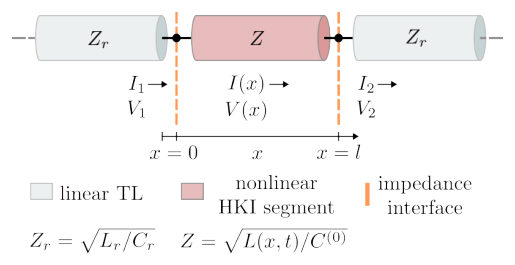
Fig 1. FIG. 1. Schematic layout of nonlinear transmission line res- onator: Within a transmission line with impedance Zr a section is replaced by a segment of length l with nonlinear impedance Z as in Eq. (3). The voltages V1, V2 and V (x) as well as the currents I1, I2 and I(x) have to fulfill the Kirch- hoff rules at the interfaces (x = 0, l).
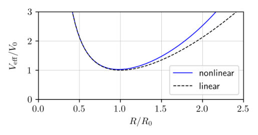
Fig 2. FIG. 2. Effective one-dimensional potential for the linear case ξ = 0 (dashed black) and the nonlinear case ξ > 0 (solid blue).
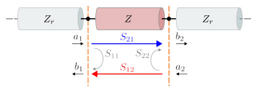
Fig 3. FIG. 3. Two-port scattering problem for a nonlinear res- onator. Incident signals a1 and a2 enter the device through the left and right ports, respectively. The corresponding scat- tered outputs are denoted by b1 and b2. The scattering pa- rameters S21 and S12 describe the transmission through the device from port 1 to 2 and from port 2 to 1 respectively. The reflection at each port is described by the parameters S11 and S22.
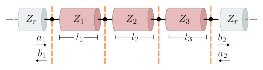
Fig 4. FIG. 5. Schematic layout of nonreciprocal device with three unmatched impedance sections: Three segments are inserted with unequal impedances Z1, Z2 and Z3 and nonlinear fea- tures.
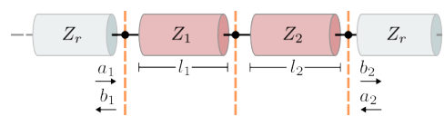
Fig 5. FIG. 4. Schematic layout nonreciprocal device: In a trans- mission line with Zr a section is replaced by two segments with Z1 and Z2 (Z1 ̸= Z2), which have nonlinear kinetic in- ductances. At their mismatch the in-/output of the segment with Z1 translates to the out-/input of the segment of Z2.
Summary. This work develops a rigorous theoretical framework using boundary value problems to analyze nonlinear microwave propagation in superconducting HKI transmission lines. By retaining full spatial field dependence, the authors predict strong directionality (diode effect) and complex spectral features like bistability and anti-resonance shifts purely from structural asymmetry. This provides a versatile tool for designing next-generation nonlinear superconducting microwave components.
Why it may be interesting. While focused on superconducting circuits, the methodology—developing a robust BVP approach for strongly nonlinear wave equations with spatial dependence—is highly relevant to modeling non-linear dynamics in open quantum systems or photonic structures where boundary conditions are critical.
Detailed structure
Main problem. To develop a theoretical framework for nonlinear wave propagation in High-Kinetic-Inductance (HKI) transmission lines that remains accurate even when spatial field variations are strong, overcoming the limitations of the slowly varying envelope approximation.
Main result. The authors demonstrated power-dependent resonance shifts, bistable solutions, and significant direction-dependent transport (diode effect) in superconducting microwave resonators without external magnetic biasing fields.
Method. The problem is formulated as a boundary value problem (BVP), allowing for the retention of full spatial field dependence, which is solved using advanced numerical techniques like the shooting method.
Model / system. The system involves nonlinear HKI superconducting microwave resonators modeled by incorporating a nonlinear inductance per unit length into the telegrapher's equations. The analysis extends to multi-segment and stub geometries.
Key observables. Power-dependent resonance shifts, bistable transmission solutions, direction-dependent transport contrast (up to 93%), and Duffing-like spectral distortions in anti-resonances.
Important parameters / regimes. The nonlinearity is governed by the kinetic inductance term; key regimes include moderate power ($P \ll Z I_*^2$) and structural asymmetry between impedance segments ($Z_1
eq Z_2$).
Assumptions / limitations. The initial analysis uses a harmonic balance ansatz, assuming higher harmonics are negligible, although the full BVP approach mitigates this limitation.
Figures summary. Figures illustrate schematic layouts of nonlinear resonators and stub geometries; spectral plots compare $S_{21}$ vs $S_{12}$ to show directionality, and power response curves demonstrate bistability.
Paper structure. The paper progresses from establishing the necessity of a full spatial boundary value problem over envelope approximations. It then applies this framework to analyze two-port scattering (showing diode effects) and extends it to multi-segment and stub geometries to explore complex nonlinear interference patterns.
Abstract
High-kinetic-inductance (HKI) transmission lines provide a promising platform for compact nonlinear superconducting microwave devices. Existing theoretical descriptions are typically based on the slowly varying envelope approximation, which becomes inadequate for strongly nonlinear resonant structures with pronounced spatial field variations. Here, we develop a theoretical framework for single-frequency nonlinear wave propagation in HKI transmission lines by formulating the problem as a boundary value problem that retains the full spatial dependence of the electromagnetic fields. Applying the method to resonant transmission-line geometries, we demonstrate power-dependent resonance shifts, bistable transmission solutions, and strongly direction-dependent transport arising from asymmetric impedance barriers, yielding transmission contrasts of up to $93\%$ without magnetic bias fields. The framework is further extended to a three-port stub geometry, where nonlinear interference produces shifted anti-resonances and Duffing-like spectral distortions. Our approach provides a versatile tool for the analysis and design of strongly nonlinear superconducting microwave devices.
Authors: Eugene B. Kolomeisky Type: theory · Category: other · PDF:https://arxiv.org/pdf/2607.29608v1 Analysis basis: full PDF text, analyzed in chunks
Topic relevance:Frenkel-Kontorova3/5 · Keldysh / 2PI / non-Gaussian methods2/5 · analog quantum simulation2/5 · driven-dissipative phase transition2/5 · methods for driven-dissipative1/5 · non-equilibrium dynamics1/5 · non-equilibrium universality1/5
↔ Scroll figures horizontally
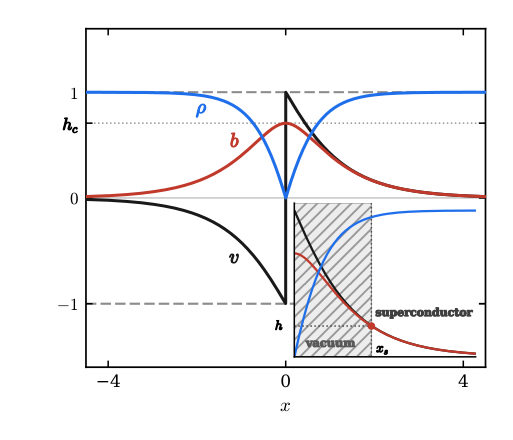
Fig 1. FIG. 1. The velocity v, magnetic induction b and super- conducting density ρ in the soliton (8). Inset: Construction of Meissner states by truncating the universal soliton at the vacuum-superconductor boundary x = xs.
Summary. This theoretical paper analyzes exotic magnetic structures, such as vortex sheets and laminar lattices, within extreme Type-II superconductors using a nonlinear velocity theory. The work derives exact solutions demonstrating how the superconducting state evolves from a Meissner profile through soliton-like defects into periodic mixed states. It provides a detailed mathematical description of these fundamental phase transitions in high-field superconductivity.
Why it may be interesting. While focused on superconductivity, the mathematical techniques—solving nonlinear partial differential equations to find stable topological defects (solitons) and phase transitions between ordered states (Meissner $ o$ Vortex Lattice)—are highly relevant to understanding dynamics in other complex physical systems studied in AMO or quantum optics.
Detailed structure
Main problem. The paper investigates nonlinear Meissner states, vortex sheets, and laminar structures that emerge in extreme Type-II superconductors.
Main result. It derives exact solutions showing that the superconducting state transitions through soliton-like vortex sheets into periodic laminar mixed states as the applied field increases.
Method. The analysis uses a nonlinear velocity theory derived from Ginzburg-Landau theory, focusing on solving the resulting one-dimensional transverse free energy functional.
Model / system. The system is extreme Type-II superconductors ($\kappa o \infty$), modeled using a nonlinear velocity theory where the free energy depends only on the superfluid velocity $v$. The governing equation simplifies to Ampère's law in terms of $v$ and the magnetic induction $b$.
Key observables. Nonlinear Meissner states, vortex sheets (solitons), laminar structures (periodic solutions), and the thermodynamic critical field ($h_c$).
Important parameters / regimes. The penetration depth parameter $\kappa$, applied external magnetic field $h$, and characteristic fields like $h_{c1}$ and $h_c$.
Assumptions / limitations. The theory assumes the extreme Type-II limit ($\kappa o \infty$) allows for a simplification of the Ginzburg-Landau functional to depend only on velocity $v$ in the 1D transverse sector.
Figures summary. Figure 1 illustrates the profiles ($v, b,
ho$) associated with the soliton solution and its truncation defining Meissner states.
Paper structure. The paper develops the nonlinear theory by analyzing the free energy functional, deriving the governing differential equation, and then solving for specific structures: the Meissner state (half-soliton), the vortex sheet (static soliton), and periodic solutions representing laminar lattices.
Abstract
A recently derived nonlinear velocity theory of extreme type-II superconductors is shown to possess an exactly solvable one-dimensional sector. Its solutions include nonlinear Meissner states exhibiting universal tails, vortex sheets, and periodic laminar structures. The thermodynamic critical field emerges from a marginal Meissner profile equivalent to the normal-superconducting boundary and may be viewed as a half-soliton. The vortex sheet is a soliton characterized by a discontinuity of the velocity field, a continuous and localized magnetic field and vanishing superconducting density at its center, and may be interpreted as the coarse-grained limit of a dense row of Abrikosov vortices. Periodic solutions describe laminar states that may be interpreted as coarse-grained rectangular vortex lattices.
Authors: David Hernández-Pinilla, Line Jelver, María Jesús Martínez-Morillo, César Hernando-Fuente, Miquel Cherta, Guillermo López-Polin, Joel D. Cox, Luisa E. Bausá, Mariola O Ramírez Type: both · Category: other · PDF:https://arxiv.org/pdf/2607.29152v1 Analysis basis: full PDF text, analyzed in chunks
Topic relevance:spintronics-quantum-optics interface3/5 · driven-dissipative phase transition1/5 · interference shaping light1/5 · quantum optics experiment1/5
↔ Scroll figures horizontally
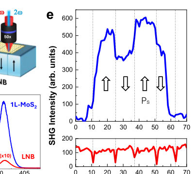
Fig 1. Figure 1. Spatial modulation of SHG in 1L-MoS2 on PPLN. a) Optical micrograph of a large-area 1L-
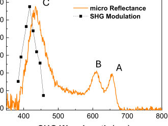
Fig 2. Figure 2. Spectral tuning of SHG modulation. a) Representative SHG intensity maps recorded at
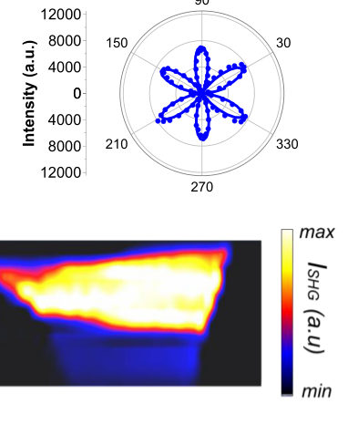
Fig 3. Figure 3. Polarization dependence of SHG modulation. Spatial distribution of the integrated SHG
Summary. This study reports on the domain-selective control of Second Harmonic Generation in MoS2 integrated with a ferroelectric LiNbO3 substrate. By exploiting the polarization dependence of the underlying ferroelectric domains, researchers induce photodoping in the MoS2 monolayer. This doping significantly enhances the material's nonlinear susceptibility ($\chi^{(2)}$), enabling programmable and switchable frequency conversion for advanced photonic applications.
Why it may be interesting. This work provides a clear demonstration of using built-in electric fields (ferroelectricity) combined with external optical pumping (photodoping) as an active knob to engineer the nonlinear optical properties of 2D materials, which is highly relevant for advanced quantum light sources and modulators.
Detailed structure
Main problem. The study aims to actively control the nonlinear optical response, specifically Second Harmonic Generation (SHG), in monolayer MoS2 by leveraging the ferroelectric domain pattern of an underlying substrate.
Main result. Ferroelectric polarization-controlled photodoping at the MoS2/LiNbO3 interface enhances the effective second-order susceptibility ($\chi^{(2)}$), leading to a significant, up to ~70%, enhancement in SHG intensity between domains of opposite polarization.
Method. The research combines all-optical, spatially resolved SHG imaging experiments with ab initio Density Functional Theory (DFT) calculations to model the electronic structure and $\chi^{(2)}$ dependence on doping.
Model / system. The physical system is a hybrid heterostructure combining monolayer molybdenum disulfide (MoS2) with periodically poled lithium niobate (LiNbO3). The ferroelectric domains in LiNbO3 induce localized photodoping in the MoS2, which modulates its electronic band structure and nonlinear optical response.
Key observables. SHG intensity modulation correlated with ferroelectric domain polarization ($ ext{P}{ ext{up}}$ vs. $ ext{P}$), and the dependence of SHG on excitation wavelength and fundamental beam power.}}$), effective second-order susceptibility ($\chi^{(2)
Important parameters / regimes. The enhancement magnitude (~70%), the role of carrier density (photodoping level, e.g., $\sim 5 imes 10^{14} ext{ cm}^{-2}$), and the resonant excitation conditions near the C interband transition.
Assumptions / limitations. The primary assumption is that the ferroelectric polarization dictates the local charge doping in MoS2, which in turn governs the magnitude of $\chi^{(2)}$ via band structure modification.
Figures summary. Figures illustrate spatial SHG mapping showing domain-dependent contrast; spectral analysis shows enhancement near two-photon resonance; and theoretical figures map calculated $\chi^{(2)}$ values based on simulated doping levels.
Paper structure. The paper establishes the platform (MoS2/LiNbO3), presents experimental measurements demonstrating polarization-dependent SHG modulation, attributes this to light-induced photodoping via domain control, and supports these findings with DFT calculations linking doping to $\chi^{(2)}$.
Abstract
Hybrid heterostructures combining two-dimensional semiconductors with ferroelectric materials offer a versatile route to actively control light-matter interactions at the nanoscale. Here, we report all-optical, light-induced domain-selective control of second-harmonic generation (SHG) in monolayer molybdenum disulfide (MoS$_2$) integrated with periodically poled lithium niobate (LiNbO$_3$). Spatially resolved SHG imaging reveals a pronounced modulation of the nonlinear optical response of monolayer MoS$_2$ governed by the ferroelectric domain pattern of the underlying substrate. A strong SHG contrast is observed between domains of opposite polarization, with a marked dependence on both the excitation wavelength and the incident optical power. The comparison between ferroelectric domains that either enable or do not exhibit light-driven photodoping in the MoS$_2$ monolayer provides a direct assessment of the role of carrier density in the nonlinear optical response. We find that ferroelectric-polarization-controlled photodoping at the MoS$_2$/LiNbO$_3$ interface enhances the effective second-order susceptibility, $χ^2$, producing an increase in SHG intensity of up to ~70% under resonant excitation conditions. Ab initio calculations corroborate that charge doping modifies the electronic band structure of MoS$_2$ and strongly affects $χ^2$ in the resonant regime, providing microscopic support for the experimentally observed modulation. The results highlight the combination of light intensity and ferroelectricity as a powerful knob for band-structure modulation in 2D materials and reconfigurable nonlinear optical responses, opening pathways toward programmable frequency conversion, smart light modulators, and advanced nonlinear photonic functionalities in integrated hybrid platforms.
Authors: Marine Bastida, Alvaro Meseguer, Iacopo Torre Type: theory · Category: other · PDF:https://arxiv.org/pdf/2607.29118v1 Analysis basis: full PDF text, analyzed in chunks
Topic relevance:non-equilibrium dynamics2/5 · Keldysh / 2PI / non-Gaussian methods1/5 · analog quantum simulation1/5 · correlated / nonlocal dissipation1/5 · driven-dissipative phase transition1/5 · methods for driven-dissipative1/5 · non-equilibrium universality1/5
↔ Scroll figures horizontally
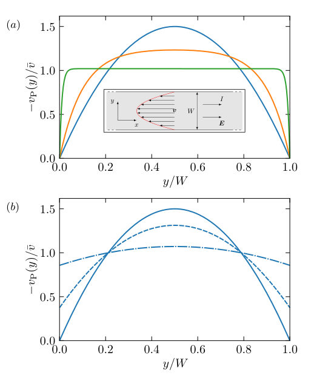
Fig 1. FIG. 1. (Color online) (a) Flow velocity in the channel as a function of the transverse coordinate y, normalized to the average velocity ¯v, for different values of the ratio W/D. The blue line corresponds to W/D →0 (standard plane-Poiseuille flow), the orange line to W/D = 10, and the green line to W/D = 100. In all cases ℓB = 0. The inset shows the sam- ple geometry with the directions of electric field, electric cur- rent, and velocity of the electronic fluid. (b) Same as in (a) for W/D →0 (standard plane-Poiseuille flow) and different values of the boundary scattering length ℓB. The solid line corresponds to ℓB = 0, the dashed line to ℓB = 0.1W and the dash-dotted line to ℓB = W.
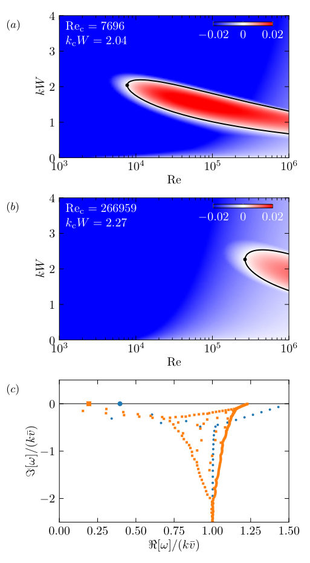
Fig 2. FIG. 2. (Color online) (a) Stability diagram of electronic Poiseuille flow. The color plot represents the imaginary part of the most unstable frequency as a function of the Reynolds number and of the wavenumber k of the perturbation. The black line separates the region where ℑ[ω] < 0 (stable) from the region where ℑ[ω] > 0 (unstable). The black dot marks the position of the smallest Reynolds number where instabil- ity occurs. (b) Same as (a) for W/D = 10 and ℓB = 0. (c) Complex-plane representation of the eigenvalues of the Orr- Sommerfeld equation at the critical point (Re = Rec, k = kc) for W/D →0 (blue dots) and W/D = 10 (orange squares). The larger symbols highlight the eigenvalues that...
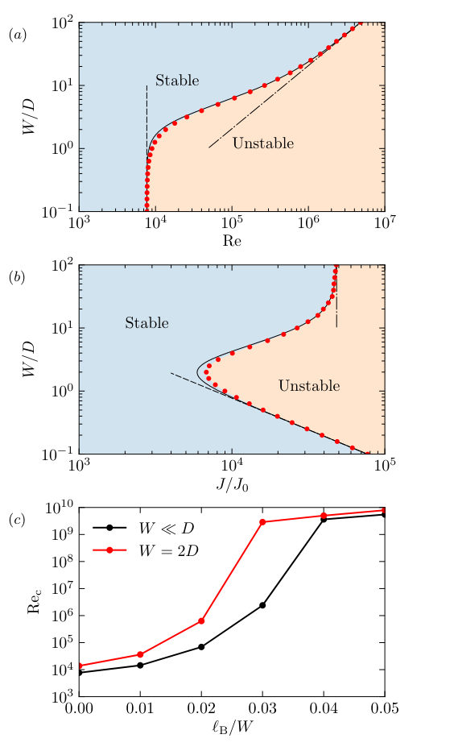
Fig 3. FIG. 3. (Color online) (a) Stability diagram as a function of Re and W/D. Red dots represent the numerical values of Rec. The black dashed line represents the Poiseuille limit (W ≪D) Rec = Re(0) c . The black dash-dotted line represents the W ≫D limit Rec = Re∞ c W/D. The black thin line represents the approximate expression (18). (b) Same as (a) expressed as a function of the current density in units of J0 on the horizontal axis. (c) Dependence of the critical Reynolds number on ℓB for W/D ≪1 (black symbols) and W/D = 2, corresponding to the minimum of J/J0 in (b), (red symbols). The dots represent the numerical points, the solid line is a guide to the eye.
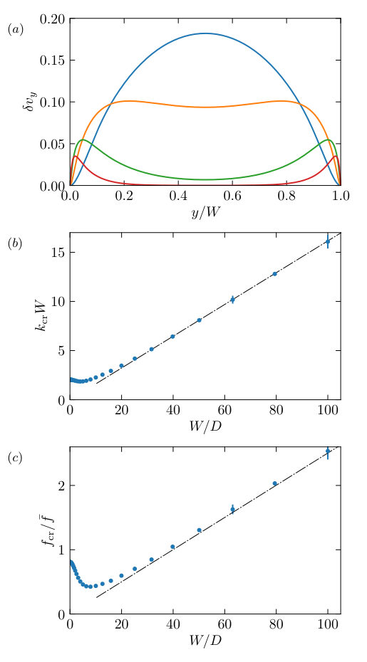
Fig 4. FIG. 4. (Color online) (a) Real part of the Velocity profile of the most unstable perturbation at the critical point for different values of the ratio W/D: W/D ≪1 (blue line), W/D = 10 (orange line), W/D = 40 (green line), and W/D = 100 (red line). The phase of the eigenfunctions is chosen to have real first component. The imaginary (out of phase) parts are too small to be represented in this figure. (b) Critical wavenumber as a function of W/D for ℓB = 0. The dots with error bars represent numerical value, the dash-dotted line corresponds to the W ≫D limit. (c) Frequency of the critical perturbation in units of ¯f as a function of W/D for ℓB = 0. The dots with error bars represent...
Summary. This paper investigates when electronic Poiseuille flow in 2D materials becomes unstable using linear stability theory. By solving a modified Orr-Sommerfeld equation, the authors determine the minimum current density required to induce turbulence. The findings pinpoint optimal geometric conditions for observing this fundamental fluid dynamic instability in nanoscale electronics.
Why it may be interesting. While focused on classical fluid dynamics, the mathematical framework of analyzing instabilities via linearized partial differential equations is highly relevant to open quantum systems and non-equilibrium dynamics.
Detailed structure
Main problem. The study analyzes the linear stability of electronic Poiseuille flow within two-dimensional materials.
Main result. The instability onset is characterized by a minimum critical current density required for turbulence, which occurs at specific geometric ratios ($W \approx 2D$).
Method. Linear stability analysis using a modified Orr-Sommerfeld equation derived from the Navier-Stokes equations.
Model / system. The system models electron flow in a 2D material (like graphene) under plane Poiseuille flow, governed by continuity and a modified Navier-Stokes equation incorporating electrical driving forces.
Key observables. Critical current density ($J_{\min}$), critical Reynolds number ($ ext{Re}c$), streamwise wavenumber ($k_c$), and frequency ($f$).
Important parameters / regimes. Channel width to diffusion length ratio ($W/D$) and boundary scattering length ($\ell_B$).
Assumptions / limitations. The analysis assumes linear perturbations, neglecting non-linear terms; it also uses simplified models for electron interactions (e.g., assuming $\ell_{ee}$ is small).
Figures summary. Figures show velocity profiles for varying geometric ratios and stability diagrams mapping the transition from stable to unstable flow regions as a function of current density.
Paper structure. The paper develops the governing equations, performs linear stability analysis by solving an eigenvalue problem (modified Orr-Sommerfeld equation), and analyzes results in various limiting regimes ($W/D$ ratios).
Abstract
Motivated by the experimental observation of electronic Poiseuille flow in graphene [J.A. Sulpizio et al. Nature 576, 75 (2019)] we analyze the linear stability of plane-Poiseuille flow of electrons in a two-dimensional material using a modified Orr-Sommerfeld equation. We calculate the critical current needed to make the flow unstable as a function of the experimental parameters and characterize the most favorable situation, that is the one needing the lowest current density, to observe flow instability. We predict the streamwise wavenumber and frequency at which the instability occurs and discuss the difficulties of an experiment aimed at probing this phenomenon.
Authors: Xinyi Yuan, Grazia Salerno Type: theory · Category: other · PDF:https://arxiv.org/pdf/2607.29356v1 Analysis basis: full PDF text, analyzed in chunks
Topic relevance:analog quantum simulation2/5 · Keldysh / 2PI / non-Gaussian methods1/5 · correlated / nonlocal dissipation1/5 · correlated cavity matter1/5 · driven-dissipative phase transition1/5 · methods for driven-dissipative1/5
↔ Scroll figures horizontally
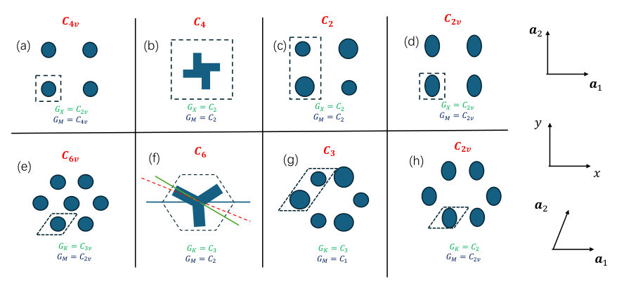
Fig 1. FIG. 1. Representative site geometries in real space of photonic crystals, annotated with the little groups of the corresponding high-symmetry points in k-space. On the right, we show the unit vectors a1,2 of the corresponding 2D Bravais lattice. (a–d) Square lattice with different corner-site geometries: circular sites, windmill sites, circular sites of different sizes at adjacent corners, and elliptical sites, respectively. (e-h) Triangular lattice with different corner-site geometries: circular sites, Y -shaped sites, circular sites of different sizes at adjacent corners, and elliptical sites, respectively. Full point group class at Γ is annotated with red color on the top, and little...
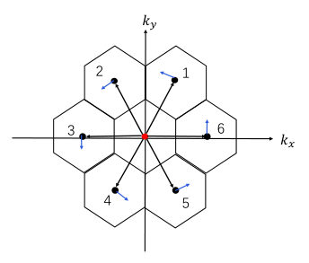
Fig 2. FIG. 2. Schematic of the minimal constituent of the trian- gular model, showing the Γ-point of a triangular lattice in momentum space, the first shell of reciprocal lattice vectors as black arrows, and the polarization degrees of freedom as blue arrows.
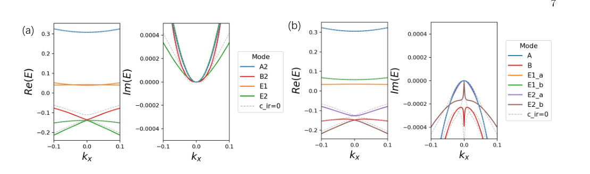
Fig 3. FIG. 3. (a) Real and imaginary parts for the energy bands of C6v, having used parameters v = 0.1, w = 0.05, u = 0.01, γ = −0.005. (b) Real and imaginary parts for the energy bands of C6, having used parameters v = 0.1, w = 0.05 ei π
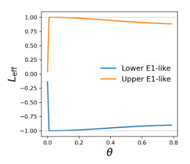
Fig 4. FIG. 4. The influence of the structure dependent angle θ on the effective angular momentum leff for the upper and lower quasi-E1 modes of C6 group. The figure is plotted with a fixed θ = 0.05. The degree of de-quantization of leff increases as θ gets larger, i.e., when the mirror symmetry is progressively broken.
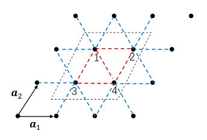
Fig 5. FIG. 5. The model of a 2 × 2 triangular lattice unit cell, which can be regarded as an extension of the structure shown in Fig.1(e). The red dashed lines represent the nearest neigh- bor hopping within the unit cell, and the blue dashed lines represent the nearest neighbor hopping between the unit cells. The primitive vectors a1,2 are also shown.
Summary. The paper establishes a group-theoretical framework to analyze topological properties like Berry phase and BICs in 2D Photonic Crystals. By adapting solid-state IR formalism, it systematically maps how crystal symmetries dictate mode behavior. This provides a powerful tool for designing photonic structures with tailored topological responses.
Why it may be interesting. This work provides a powerful mathematical tool (group theory) to analyze wave phenomena in engineered optical structures, bridging solid-state topology concepts directly into the realm of photonics and open quantum systems.
Detailed structure
Main problem. To develop a group-theoretical framework for understanding local k-space topology and Berry phase in 2D Photonic Crystals (PhCs).
Main result. The irreducible-representation formalism allows for the systematic classification of topological phenomena, showing that non-Abelian groups are key for Berry phase emergence.
Method. Applying group theory concepts, specifically decomposing basis functions using symmetry operations and block-diagonalizing the Bloch Hamiltonian to analyze mode coupling.
Model / system. The system is 2D Photonic Crystals (PhCs), modeled by a Bloch Hamiltonian adapted from solid-state physics, incorporating radiative coupling and transverse conditions. The analysis extends beyond scalar Schrödinger operators.
Key observables. Local k-space topology, Berry phase, symmetry-protected degeneracies, BIC linewidths, and mode hybridization conditions.
Important parameters / regimes. High symmetry points ($\Gamma$-point), structural design parameters, and coefficients associated with targeted irreducible representations (IRs).
Assumptions / limitations. The analysis assumes the system can be effectively decoupled from the radiation continuum for initial block decomposition, though extensions are discussed.
Figures summary. Figure 1 shows representative site geometries in real space for square and triangular lattices, annotated with little groups at high-symmetry points.
Paper structure. The paper introduces the IR formalism to classify topology, applies it to study BICs/vortex beams using PWE and non-Hermitian Hamiltonians, and concludes by detailing how structural or gain/loss perturbations can systematically manipulate these topological features.
Abstract
Two-dimensional photonic crystals (2D PhCs) enable fine-grained control over a broad set of Bloch modes without the constraints of band occupancy and natural crystal structures, and, as intrinsically open systems, serve as versatile platforms for exploring diverse topological phenomena. Here, we develop a theoretical framework inspired by the irreducible-representation formalism in solid-state physics, while explicitly incorporating key characteristics of photonic Bloch systems, such as radiative coupling and transverse condition. Within this framework, we study the symmetry origins of local k-space topology, e.g., bound-states in the continuum and optical vortex beams, and Berry phase in two representative systems. We further analyze, from a group-theory perspective, how tailored structural designs and targeted symmetry perturbations can be exploited to manipulate these topological features. In particular, we showcase the application of the formalism to Bloch modes from distinct truncation approaches and specify the preferable regimes for each, both under a generic $n$-band configuration. The analysis can thereby be readily extended to a wide range of artificial wave crystals beyond scalar Schrödinger-like operators and two-level treatment.
Authors: Mingyang Zheng, Rebika Makaju, Rasul Gazizulin, Alex Levchenko, Sadhvikas J. Addamane, Dominique Laroche Type: experiment · Category: other · PDF:https://arxiv.org/pdf/2607.29630v1 Analysis basis: full PDF text, analyzed in chunks
Topic relevance:non-equilibrium dynamics2/5 · Frenkel-Kontorova1/5 · correlated / nonlocal dissipation1/5 · driven-dissipative phase transition1/5 · methods for driven-dissipative1/5 · non-equilibrium universality1/5
↔ Scroll figures horizontally
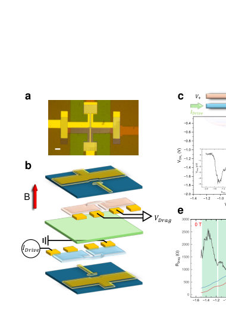
Fig 1. Fig. 1 Onsager relation and Drag signal subband dependence. a, Microscope image of the device. The scale bar is 10 µm .b, Schematic of device structure with negative voltage applied to four gates (shown in gold color). Each wire is defined by one plunger (PL) and one pinch-off (PO) gate on each 2DEG. The PO gates are primarily used to independently contact the quantum wires and minimize tunneling current between them, while the PL gates are used to adjust the wires’ width and electronic density. The top plunger (TPL) and top pinch-off (TPO) gates form the top wire electrostatically on the top 2DEG, which is shown in pink. The yellow squares are the Ohmic contacts connecting the 2DEG....
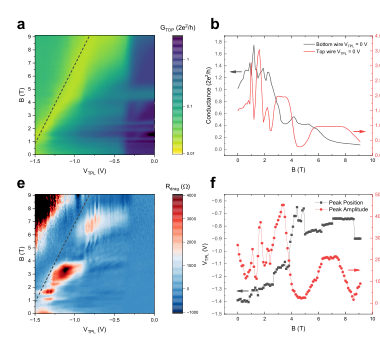
Fig 2. Fig. 2 Coulomb drag between magnetic depopulated wires. a, 2D map of the top (drag) wire conductance as a function of TPL gate voltage and magnetic field. The conductance signal oscillates as a function of the magnetic field, representing the magnetic depopulation of different wire 1D subbands. The dark gray dashed line in a and e represents the shift of the drag wire’s pinch-off position due to magnetic depopulation. The signal on the left of the pinch-off line is attributed to tunneling and not discussed here. b, Oscillatory magnetoconductance of the top and bottom wires at VTPL = 0 V, VBPL = −0.3 V on line 1. The residual oscillatory minima observed in the top wire at VTPL = 0 V...
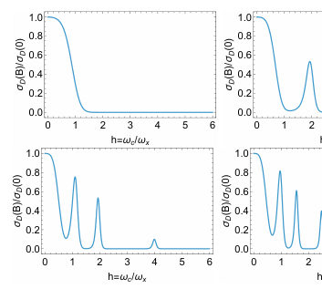
Fig 3. Fig. 3 Model results for Coulomb drag magneto-oscillations. Normalized drag conductance as a function of magnetic field, σD(B)/σD(0), computed from the transmission eigenvalue model of Ref. [49, 50]. Mode-dependent transmission coefficients were computed based on the globally adiabatic saddle-point model of a wire constriction. Each panel corresponds to the same fixed value of a ratio ωy/ωx = 1 between frequencies corresponding to the confining curvature and saddle curvature of the potential respectively. The dimensionless scale of the field h is described by the cyclotron frequency ωc measured in units of ωx. Gate voltages in each wire eVg1,2 are also measured in units of ωx. In this model...
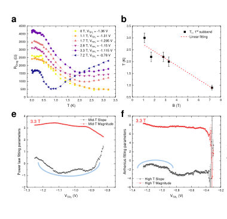
Fig 4. Fig. 4 Temperature-dependent Coulomb drag at various magnetic fields. a, 1st subband peak drag resistance as a function of temperature at various magnetic fields in a linear scale. b, Upturn transition temperature T1 as a function of magnetic field for the 1st subband peak. With the magnetic field increasing, T1 decreases from 3 K to 1 K, and the dashed line shows the linear fitting of T1 as a function of B. c, d, 1st subband peak drag resistance as a function of temperature at 0 T and 7.2 T in c, log-log scale, and d, Arrhenius scale. The dashed lines in c and d are the linear fitting of the intermediate temperature (Mid-T) regime, while the solid lines are the linear fitting of the high...
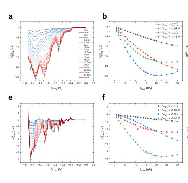
Fig 5. Fig. 5 Nonlinear I-V and linear I-R at 0 T. a, Antisymmetric drag voltage V AS Drag as a function of VTPL and drive current IDrive for line 1. IDrive ranges from 1 nA to 30 nA. b, Nonlinear and nonmonotonous V AS Drag as a function of IDrive at a few selected peak positions, shown by the arrows in a. c, Linear RAS Drag as a function of IDrive at the selected peak positions. The solid lines represent the linear fittings in the high-bias regime. d, Linearly fitted slope and intercept of RAS Drag as a function of VTPL. e-h, similar to a-d, but for the symmetric component of drag signals. While both VAS Drag and V S Drag have strong nonlinearity and even nonmonotonic dependencies, RAS Drag and...
Summary. This paper reports on advanced experiments measuring Coulomb drag in 1D semiconductor quantum wires. By systematically varying temperature and magnetic field, the authors resolved a transition between two distinct physical regimes: one dominated by momentum conservation and another averaged over disorder. This establishes a quantitative method for characterizing electron-electron interactions in these complex low-dimensional systems.
Why it may be interesting. This work provides a highly quantitative experimental framework for probing fundamental many-body interactions (like those in TLLs) in low dimensions by using transport measurements sensitive to both quantum confinement effects (B-field oscillations) and thermal scattering mechanisms (T-dependence).
Detailed structure
Main problem. The study addresses the challenge of understanding electron-electron interactions in one-dimensional (1D) systems, particularly for Tomonaga-Luttinger liquids, complicated by disorder effects observed in Coulomb drag experiments.
Main result. The researchers successfully characterized 1D interaction parameters and identified two distinct temperature regimes—momentum-resolved and disordered-averaged—by analyzing the systematic evolution of the Coulomb drag signal with magnetic field and temperature.
Method. Measurements involve performing Coulomb drag measurements (measuring induced voltage/resistance) in vertically coupled quantum wires while varying perpendicular magnetic fields and temperatures, complemented by magnetic depopulation analysis.
Model / system. The physical platform is a system of vertically coupled GaAs-AlGaAs quantum wires acting as drive and drag conductors. The physics involves electron transport in quasi-1D Luttinger liquid regimes subjected to external magnetic fields and temperature variations.
Key observables. Coulomb drag voltage/resistance ($R_{Drag}$), magnetoconductance oscillations, and the crossover temperature ($T_1$) separating different scaling regimes.
Important parameters / regimes. Temperature (T), perpendicular Magnetic Field (B), Luttinger liquid interaction parameters (K), and disorder strength effects.
Assumptions / limitations. The analysis assumes that the observed drag signal is dominated by momentum transfer when subbands align, and it models the transition between different scattering/relaxation regimes based on temperature scaling laws (power-law vs. Arrhenius).
Figures summary. Figures show 2D maps of $R_{Drag}$ dependence on gate voltage and B, demonstrating oscillatory behavior tracking magnetic depopulation; plots illustrate the systematic shift and suppression of drag peaks with increasing B, and fit results confirm power-law (Mid-T) and Arrhenius (High-T) temperature dependencies.
Paper structure. The paper establishes the experimental setup using quantum wires, details measurements across varying T and B fields to observe subband depopulation via magnetoconductance, analyzes $R_{Drag}$ oscillations tracking these depopulations, and finally maps out the temperature dependence to define the crossover between momentum-resolved and disorder-averaged drag regimes.
Abstract
Advancing the understanding of electron-electron interactions in one-dimensional systems remains one of the central challenges in low-dimensional physics, especially for Coulomb-coupled Tomonaga-Luttinger liquids. Notably, the difficulty of reliably extracting one-dimensional system parameters, combined with the presence of disorder, has hindered the interpretation of 1D Coulomb drag experiments. Here, we present a self-consistent experimental determination of the relative Luttinger liquid interaction parameters through 1D Coulomb drag measurements, and achieve quantitative agreement with theoretical predictions. Utilizing vertically coupled GaAs-AlGaAs quantum wires, we fully characterize the one-dimensional parameters through magnetic depopulation. Coulomb drag exhibits a systematic evolution with magnetic field, reflecting the successive depopulation of 1D subbands and the suppression of disorder effects. Two distinct temperature regimes are identified, marking the boundary between momentum-resolved and disordered-averaged Coulomb drag. The observed scaling, peak broadening, and nonlinear current-voltage characteristics establish a unified and quantitative framework for probing electron-electron interactions in 1D systems.
Authors: Jin-Hyung Choi, Sang-Hoon Han, Young-Kwon Han, Sun-Woo Kim, Jun-Won Rhim, Joshua J. P. Thompson Type: theory · Category: other · PDF:https://arxiv.org/pdf/2607.28731v1 Analysis basis: full PDF text, analyzed in chunks
Topic relevance:analog quantum simulation1/5 · correlated cavity matter1/5 · driven-dissipative phase transition1/5
↔ Scroll figures horizontally
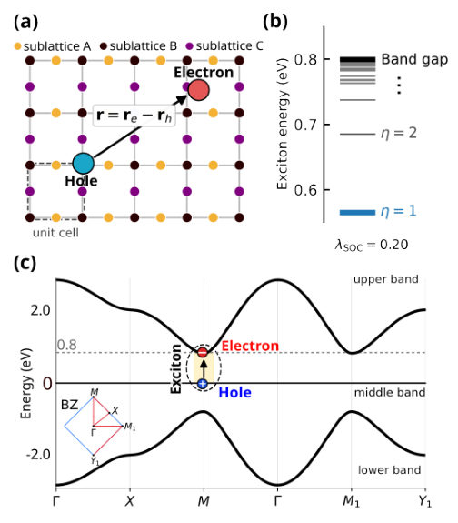
Fig 1. FIG. 1. Overview of the Lieb-lattice exciton. (a) Lieb lattice with three sublattices per unit cell and an ex- citon represented by the in-plane electron–hole relative co- ordinate r = re −rh. (b) Energies of lowest exciton states at λSOC = 0.20. The black line marks the minimum direct single-particle band gap. (c) Single-particle band structure along the high-symmetry path shown in the inset. The ex- citon is formed between the upper and middle bands. The single-particle direct optical gap is approximately 0.8 eV in this case, and the exciton levels lie below this energy owing to the attractive electron–hole interaction.
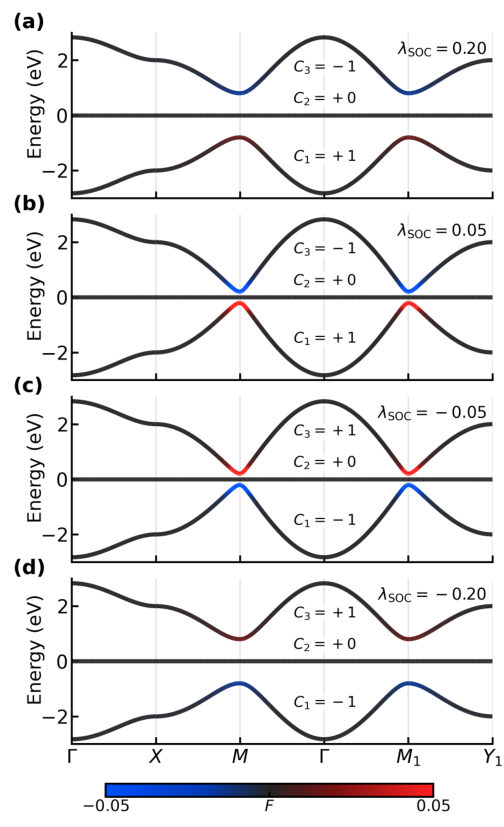
Fig 2. FIG. 2. SOC-tuned band geometry of the Lieb- lattice model. (a-d) Band structures for λSOC = 0.20, 0.05, −0.05, and −0.20. The colour scale shows the Berry curva- ture along the high-symmetry path, and the labels indicate the Chern numbers of the corresponding bands. As |λSOC| de- creases, the bands become more Dirac-like near the band-gap minimum and the Berry curvature becomes more strongly localized there. Although the Berry-curvature distribution changes substantially, the band Chern numbers remain fixed until the gap closes at λSOC = 0.
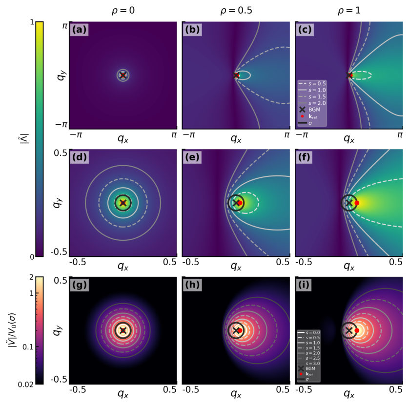
Fig 3. FIG. 3. Form-factor suppression of the projected Coulomb interaction. Panels (a)–(f) show the electron–hole form-factor magnitude |eΛqref q|, and panels (g)–(i) show the corresponding projected interaction magnitude |eVqref q|/|V0(σ)|. Here, q = k −M, qref = kref −M = ρ σ (cos θ, sin θ), and eVqref q = V0(qref −q)eΛqref q. The results are shown for θ = 0 and ρ = 0, 0.5, and 1.0 from left to right. Panels (a)–(c) show the full momentum window, whereas panels (d)–(f) and (g)–(i) show the corresponding regions around the band-gap minimum M. The contours mark |eΛqref q| = e−s in panels (a)–(f) and |eVqref q|/|V0(σ)| = e−s in panels (g)–(i), for the indicated values of s. The black circle has...
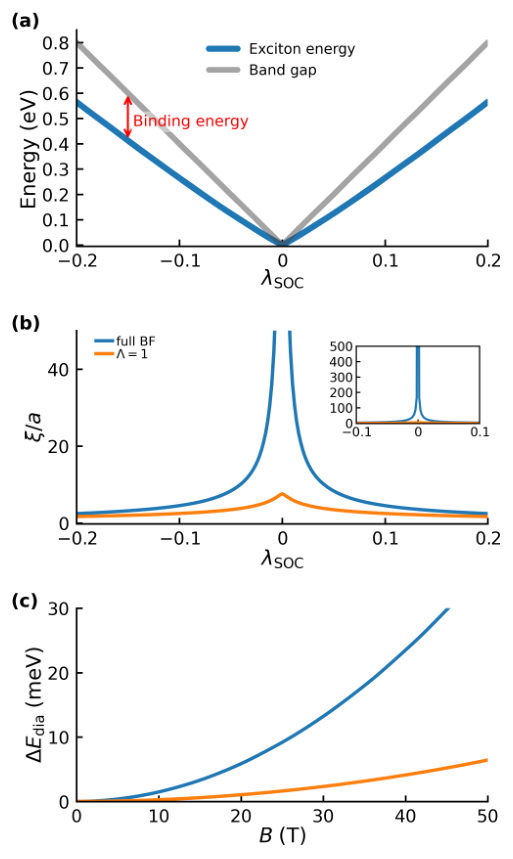
Fig 4. FIG. 4. Exciton-radius enhancement and diamag- netic response. (a) Energy of the lowest exciton state and the minimum direct band gap as functions of λSOC. The difference between them is the binding energy (red arrow). (b) Corresponding radii ξ/a from the Bloch-frame calcula- tion (blue) and the unity-overlap reference (orange). The inset shows the rapid growth near the gap closing on an ex- tended scale. (c) Quadratic diamagnetic shifts estimated from ∆Edia(B) = e2ξ2B2/(8mr) in the small-gap regime. The unity-overlap reference is obtained by replacing ξ with ξ(0).
Summary. This theoretical paper demonstrates that exciton properties are highly sensitive to the quantum geometry of Bloch states, especially near topological phase transitions. By analyzing a Lieb-lattice model, the authors show that the momentum dependence of electron and hole wavefunctions suppresses Coulomb interactions, which in turn enlarges the real-space exciton radius. This effect provides an experimentally accessible signature—an enhanced diamagnetic response—that relies on quantum geometry rather than just semiclassical parameters.
Why it may be interesting. This work provides a concrete mechanism linking topological band structure features (like Berry curvature) directly to measurable optical properties (exciton size), offering an advanced route for material design beyond simple effective mass theory.
Detailed structure
Main problem. The study investigates how quantum geometry, specifically near a topological band-gap closing, fundamentally alters exciton properties like their size.
Main result. Suppression of the electron-hole Coulomb matrix elements due to momentum-dependent Bloch states leads to a narrowing in momentum space and a measurable enlargement of the exciton radius in real space.
Method. The authors solve the band-projected Wannier equation using a Lieb-lattice model, comparing results obtained with full quantum geometry effects versus simplified unity-overlap approximations.
Model / system. The system is modeled using a spin–orbit-coupled Lieb-lattice Hamiltonian tuned toward a topological phase transition. Excitons are treated as fundamental excitations whose properties depend on the Bloch states of the underlying electron and hole bands.
Key observables. Exciton radius ($\xi$), weak-field diamagnetic response, projected Coulomb matrix elements ($|\Lambda_{\mathbf{k}\mathbf{k}'}|$), and the Hilbert–Schmidt quantum distance.
Important parameters / regimes. Topological phase transition point (band-gap closing), spin-orbit coupling strength ($\lambda_{SOC}$), and momentum separation ($q$).
Assumptions / limitations. The analysis relies on defining the exciton state via a projected Wannier equation and utilizing covariant derivatives to incorporate Berry connections into the position operator.
Figures summary. Figures illustrate single-particle band structures, Berry curvature distribution across varying SOC strengths, and plots showing the suppression of the form factor $|e\Lambda_{q_{ ext{ref}}, q}|$ as a function of momentum angle $ heta$.
Paper structure. The paper systematically develops the theoretical framework by defining the projected relative-position operator using covariant derivatives. It then applies this to a Lieb lattice, showing how topological transitions modify the quantum metric and subsequently alter exciton size and diamagnetic response compared to semiclassical limits.
Abstract
Exciton engineering traditionally focuses on modifying semiclassical material properties, such as the effective mass and dielectric screening, while largely overlooking the quantum geometry of the underlying electron and hole Bloch states. This approximation is adequate for many materials but breaks down near a topological band-gap closing, where the quantum metric around the band extrema becomes strongly enhanced. In this regime, Bloch states at different momenta become less similar, reducing the projected electron--hole Coulomb matrix elements and consequently weakening exciton binding. We demonstrate this mechanism in a spin--orbit-coupled Lieb-lattice model tuned toward a topological phase transition. The suppressed Coulomb matrix elements narrow the exciton wavefunction in momentum space, leading to an enlarged exciton radius in real space. This increase in exciton size produces an experimentally accessible enhancement of the weak-field diamagnetic response. Our results show that quantum geometry can fundamentally reshape exciton properties near a topological phase transition, revealing a previously underexplored route for engineering excitonic states.
Authors: Rhonald Burgos Atencia Type: theory · Category: other · PDF:https://arxiv.org/pdf/2607.28744v1 Analysis basis: full PDF text, analyzed in chunks
Topic relevance:Keldysh / 2PI / non-Gaussian methods1/5 · analog quantum simulation1/5 · spintronics-quantum-optics interface1/5
↔ Scroll figures horizontally
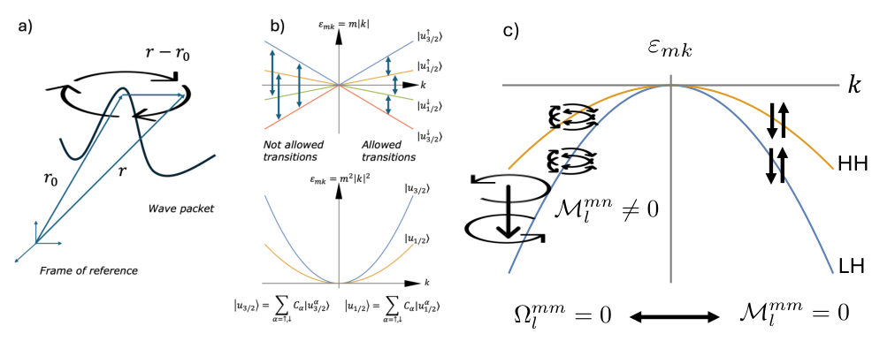
Fig 1. FIG. 1. (a) The classical orbital angular momentum depends on the choice of reference frame. While L = r × v is origin dependent, the combination L = (r −r0) × v is defined with respect to the center of the wave packet, as employed in the semiclassical description of the orbital magnetic moment. (b) Schematic dispersion relations of the four-dimensional SU(2) model for the linear and quadratic Hamiltonians. The upper panel illustrates the allowed and forbidden interband transitions associated with the Berry connection, highlighting the nonvanishing matrix elements of the vector Berry connection AL = iR†(θ, ϕ)∇kR(θ, ϕ). The lower panel shows the quadratic spectrum, whose eigenstates are...
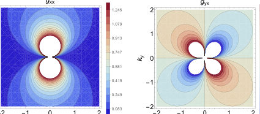
Fig 2. FIG. 2. The quantum metric is determined by the derivatives of the texture ˆh, namely, gµβ ∝∂µˆh · ∂βˆh. The components relevant for the present calculation are gxx and gyx, whose momentum-space distributions are shown as contour plots. While gyx averages to zero due to its parity, it yields a finite contribution to the orbital Hall response when combined with the factor Cν,α, which compensates its symmetry.
Summary. This theoretical paper analyzes the intrinsic Orbital Hall Effect in spin-3/2 degenerate semiconductors. It proves that this effect is not due to the Berry curvature, but rather arises purely from interband contributions mediated by the quantum metric. This establishes a distinct, geometrically controlled mechanism for orbital transport.
Why it may be interesting. While focused on condensed matter transport, the reliance on 'quantum geometry' (the quantum metric) as a primary physical observable connects directly to geometric phases and topological invariants studied in AMO physics.
Detailed structure
Main problem. The study investigates the intrinsic Orbital Hall Effect (OHE) in degenerate spin-3/2 systems to determine the fundamental geometric quantity governing this transport.
Main result. The OHE is found to be governed entirely by the quantum metric acting on interband orbital magnetic moment components, rather than the Berry curvature or conventional intraband contributions.
Method. Theoretical calculation using linear response theory applied to a Luttinger Hamiltonian model, focusing on matrix elements of the Orbital Magnetic Moment (OMM).
Model / system. The system is modeled as degenerate spin-3/2 semiconductors described by a Luttinger Hamiltonian. The analysis leverages symmetries inherent in this degenerate manifold.
Key observables. Orbital Hall conductivity ($\sigma_{z, ext{Hall}}^{yx}$), Orbital Magnetic Moment (OMM), Quantum Metric components ($g_{xx}, g_{yx}$).
Important parameters / regimes. Fermi energy ($\epsilon_F$), material parameters related to heavy-hole and light-hole band gaps ($\gamma_{3/2} - \gamma_{1/2}$), and the Luttinger Hamiltonian coefficients.
Assumptions / limitations. The analysis assumes rotational invariance, utilizes the Luttinger model framework, and relies on approximations like the spherical approximation for tractability.
Figures summary. Figures illustrate schematic dispersion relations comparing linear and quadratic Hamiltonians, showing where intraband OMM vanishes in the degenerate spectrum. Contour plots visualize momentum-space distributions of the quantum metric components.
Paper structure. The paper establishes the physical problem by noting that conventional contributions vanish in degenerate systems. It then develops the theory to show the survival of an interband mechanism governed solely by the quantum metric, culminating in explicit analytical expressions and numerical estimates for various semiconductors.
Abstract
We show that in rotationally invariant spin-$3/2$ systems the orbital Hall effect originates from interband matrix elements of the orbital magnetic moment. The resulting Hall response is governed by the quantum metric, rather than by the Berry curvature, revealing a purely geometric transport mechanism. Conventional intraband contributions associated with the orbital magnetic moment and Berry curvature are shown to vanish identically in degenerate systems. These results identify the quantum metric as the key geometric quantity controlling orbital Hall transport in degenerate multiband systems.
Authors: Panupol Untarabut, Narjes Jomaa, Sylvian Cadars, Olivier Masson, Samuel Bernard, Assil Bouzid, Santanu Saha Type: theory · Category: disordered systems and neural networks · PDF:https://arxiv.org/pdf/2607.29510v1 Analysis basis: full PDF text, analyzed in chunks
Topic relevance:analog quantum simulation1/5 · methods for driven-dissipative1/5 · non-equilibrium dynamics1/5
↔ Scroll figures horizontally
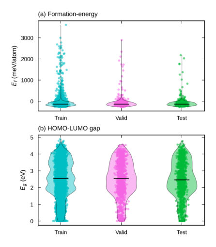
Fig 1. Figure 1: Target-property distributions for the training, validation, and test subsets of the ordered single and double perovskite oxide dataset: (a) formation energy (meV/atom) and (b) HOMO-LUMO gap (eV). Formation energy is evaluated with respect to stable binary oxides of different cationic species. Ordered perovskite oxide consists of single ABO3 and double A2BB’O6 perovskites.
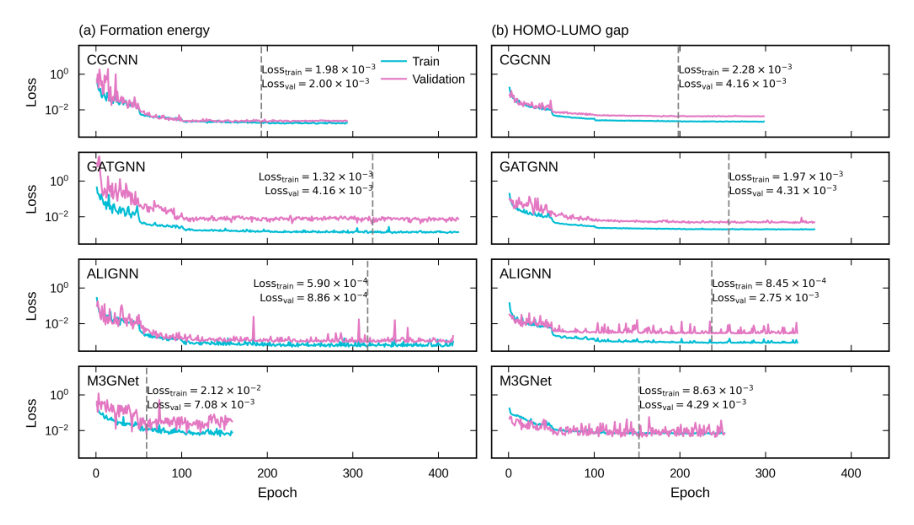
Fig 2. Figure 2: Training behavior of the graph neural network models on the training and validation set of the ordered single and double perovskite dataset. (a) Formation-energy(Ef) training and validation loss trajectories for CGCNN, GATGNN, ALIGNN, and M3GNet. (b) HOMO-LUMO gap (Eg) training and validation loss trajectories for the same models. The cyan and pink solid lines represent the training and validation losses, respectively. Grey vertical dashed lines mark the best validation checkpoints.
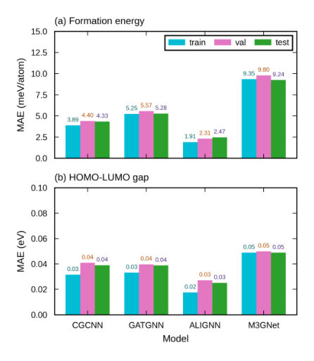
Fig 3. Figure 3: Train, validation, and test MAE values for the ordered domain (single and double perovskite). (a) Formation-energy error (meV/atom). (b) HOMO-LUMO gap errors (eV).
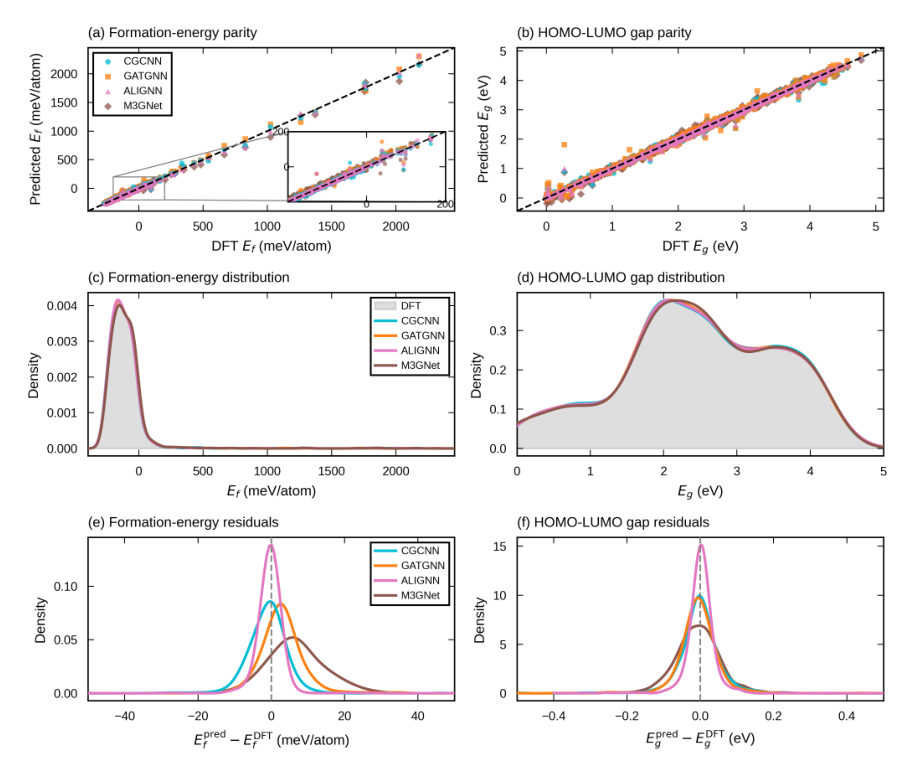
Fig 4. Figure 4: Prediction quality of the trained GNN models on the ordered single and double perovskite test set. Parity plots for (a) formation-energy and (b) HOMO-LUMO gap predictions. Distribution of the calculated DFT and model predicted values of (c) formation energy and (d) HOMO-LUMO gap. Residual distributions of all GNN models for (e) formation energy and (f) HOMO-LUMO gap.
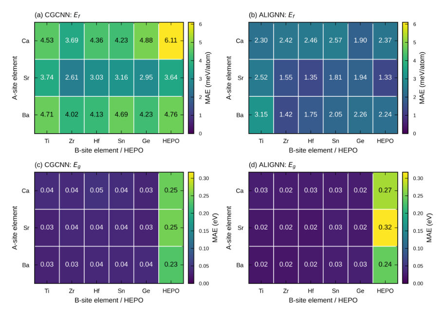
Fig 5. Figure 5: Chemistry-resolved prediction errors on held out test set of ordered and disordered domain. CGCNN MAE maps for (a) formation energy Ef (meV/atom) and (b) HOMO-LUMO gap Eg (eV). ALIGNN MAE maps for (c) formation energy Ef and (d) HOMO-LUMO gap Eg . Rows denote the A-site element, and columns denote the ordered B-site element or the HEPO transfer group.
Summary. This work addresses the challenge of predicting properties in disordered High-Entropy Perovskite Oxides by using graph neural networks trained via transfer learning. The study finds that while structural stability ($ ext{E}_f$) transfers well, electronic gaps ($ ext{E}_g$) require targeted fine-tuning with HEPO data. It highlights that incorporating local geometric information is crucial for accurate modeling of complex disordered materials.
Why it may be interesting. While focused on solid-state materials, the core methodology—using advanced ML (GNNs) to extrapolate physical laws from a known, ordered regime to a highly complex, disordered one—is directly relevant to modeling many-body systems where disorder or quenched randomness is present.
Detailed structure
Main problem. Accurately predicting material properties, specifically formation energy and HOMO-LUMO gap, in chemically complex and structurally disordered High-Entropy Perovskite Oxides (HEPOs).
Main result. Knowledge transfer from ordered perovskites is effective for formation energy but fails for the HOMO-LUMO gap due to local environment sensitivity; incorporating small HEPO data significantly improves electronic property prediction.
Method. The study employs graph neural networks (GNNs) trained using an ordered-to-disordered transfer learning paradigm, comparing performance across four different GNN architectures.
Model / system. The physical system is the perovskite oxide structure ($ ext{ABO}_3$), modeled computationally using Special Quasirandom Structures (SQSs) to represent chemical and structural disorder in HEPOs. The prediction targets are DFT-calculated formation energy ($E_f$) and HOMO-LUMO gap ($E_g$).
Key observables. Formation energy ($ ext{E}_f$), HOMO-LUMO gap ($ ext{E}_g$), Mean Absolute Error (MAE), and residual distributions.
Important parameters / regimes. The transferability of knowledge, the fraction of HEPO-specific training data used for fine-tuning, and the inclusion of three-body geometric information (e.g., bond angles).
Assumptions / limitations. Knowledge learned from chemically ordered perovskites can serve as a starting point for predicting properties in disordered HEPOs.
Figures summary. Figures illustrate training loss trajectories showing ALIGNN's superior convergence, and MAE comparisons demonstrating the performance of different models on both ordered and HEPO test sets.
Paper structure. The paper first establishes the challenge posed by HEPOs. It then details the methodology using GNNs for transfer learning from ordered to disordered domains. Results are presented by comparing $ ext{E}_f$ vs. $ ext{E}_g$ transferability, followed by an analysis of model performance and optimal data incorporation strategies.
Abstract
High-entropy perovskite oxides (HEPOs) represent a chemically complex class of materials with promising functional properties, yet their vast compositional space and, chemical/structural disorder pose significant challenge for accurate property prediction. Graph neural networks (GNNs) enable rapid exploration of materials space but are often limited by the availability of representative training data. Here, we investigate ordered-to-disordered transfer learning using GNNs for formation-energy and HOMO-LUMO gap prediction in HEPOs by transferring knowledge learned from chemically ordered perovskites. Four representative GNN models, including CGCNN, GATGNN, ALIGNN and M3GNet are evaluated to understand the role of structural representations, spanning pairwise two-body and angular three-body interactions in transfer performance. We find strong property-dependent transfer behavior: formation-energy prediction transfers effectively to disordered HEPOs, whereas HOMO-LUMO gap prediction shows limited transferability due to its sensitivity to local chemical environments. Incorporating a small HEPO-specific training dataset substantially improves HOMO-LUMO gap prediction. Representation-level analysis using UMAP further highlights the importance of encoding three-body geometric information such as in ALIGNN for capturing complex structure-property relationships and improving transferability.
Authors: Felipe Pérez Riffo, Matías Castro, Leonor Chico, L. E. F. Foa Torres. Eric Suárez Morell Type: theory · Category: other · PDF:https://arxiv.org/pdf/2607.28927v1 Analysis basis: full PDF text, analyzed in chunks
Topic relevance:Keldysh / 2PI / non-Gaussian methods1/5 · driven-dissipative phase transition1/5
↔ Scroll figures horizontally
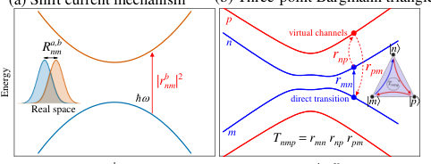
Fig 1. FIG. 1. (a) SC mechanism: a vertical interband transition promotes an electron at fixed k [rate |rb nm|2], displacing its real-space charge center by the shift vector Ra;b nm; the photocurrent is the coherent sum of these shifts. (b) Gapped AB-bilayer bands near K (low-energy optical pair m, n in blue; dimer bands in red): the resonant pair and a dimer spectator p form the three-point Bargmann triangle m → n →p →m with interband connections rnm (optical) and rnp, rpm (virtual).
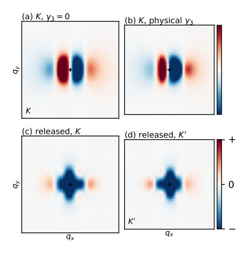
Fig 2. FIG. 2. Gap-edge SC integrand Iyyy(q) around the valleys for the linearized AB bilayer. (a) At γ3=0, four lobes of alternating sign whose net response vanishes, ⟨I⟩= 0, the emergent-C∞symmetry cancellation. (b) With γ3 the release is a small distortion of a large, near-cancelling background. (c) Their difference, the O(γ3) released component, carries a nonzero net scalar concentrated near K. (d) The same released component at the time-reversed valley K′ [HK′(q) = HK(−q)∗]: the q →−q image of (c); the two valleys add rather than cancel, consistent with the mirror-even σyyy.
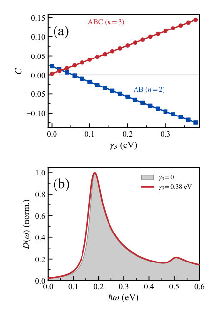
Fig 3. FIG. 3. (a) Coherence factor C [Eq. (10)] of the band-edge SC versus trigonal warping γ3, from the full TB models at fixed bias (AB, δ = 0.10 eV, blue; ABC, 2U = 0.10 eV, red; nk = 1500). Both grow linearly from a small, symmetry-enforced residual at γ3=0, but with opposite sign [Fig. 5(d)]. (b) Dipole-only weight D(ω) of the bilayer [Eq. (22), the optical rate without the shift vector] at γ3 = 0 (grey) and γ3 = 0.38 eV (red), δ = 0.10 eV, 20 meV broadening.
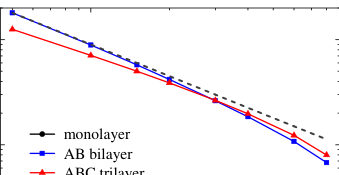
Fig 4. FIG. 4. Band-edge weight W(δ) = R d2q Iyyy versus gap δ (log– log), from the TB spectra. The monolayer saturates (exponent 0) [Eq. (20)], while the AB bilayer and ABC trilayer both diverge as 1/δ (dashed guide; trilayer fit exponents −0.92 to −1.06), the same order despite the flatter cubic touching.
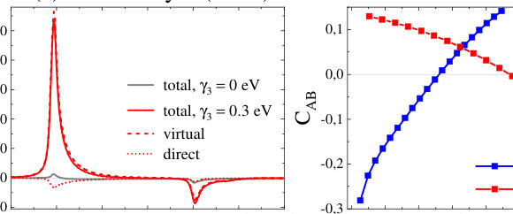
Fig 5. FIG. 5. SC across the graphene family from the full TB Hamiltonians, and its gate-driven sign reversal. (a) Monolayer (n=1): a single direct-channel peak just above the threshold 2δ (δ = 0.10 eV). (b) AB bilayer (n=2) and (c) ABC trilayer (n=3): σyyy(ω) resolved into total, virtual (dotted) and direct (dashed) channels at the physical γ3 (color), with the total at γ3=0 (grey) for reference; the virtual channel carries essentially the whole band-edge response, near-canceled at γ3=0, and the two touchings release with opposite sign (AB negative, ABC positive at the band edge). (d) Coherence factor C versus interlayer bias for the bilayer (δ/γ1, left axis) and trilayer (2U/γ1, right axis): C...
Summary. This theoretical work derives a symmetry selection rule that explains the sign reversal of band-edge shift currents in 2D Dirac systems like graphene. By utilizing a three-point Bargmann invariant and analyzing emergent rotational symmetries, the authors show that warping breaks a protective symmetry, enabling a gate-switchable photovoltaic response.
Why it may be interesting. The rigorous derivation of an exact angular selection rule governing a measurable photocurrent response provides deep insight into how crystal symmetries dictate electronic transport properties in low-dimensional materials, relevant for understanding topological or strongly correlated responses.
Detailed structure
Main problem. The paper addresses the sign reversal of large band-edge shift currents observed in graphene multilayers, a phenomenon not explained by standard quantum metrics like Berry curvature.
Main result. It establishes an exact angular selection rule showing that an emergent rotational symmetry forbids the current in 2D, and this response is switched on linearly by trigonal warping. This makes the current parameter-free and gate-switchable in bilayer/trilayer graphene.
Method. The analysis uses advanced concepts from quantum geometry, developing a three-point Bargmann invariant to characterize the bulk photovoltaic response ($\sigma_{a;bc}(\omega)$).
Model / system. The study focuses on inversion-broken, two-dimensional gapped Dirac-like systems, specifically modeling graphene multilayers and the kagome lattice.
Key observables. Shift current ($ ext{SC}$), three-point Bargmann invariant ($T^{nmp}$), and the bounded coherence factor ($C$).
Important parameters / regimes. Gate voltage (for sign reversal), warping strength, and dimensionality (2D vs 3D).
Assumptions / limitations. The analysis is restricted to the bulk, second-order-in-field mechanism near band-edge touchings.
Figures summary. Figures illustrate the microscopic shift current contribution ($\propto |r_b^{nm}|^2 \mathbf{R}_{a;b}^{nm}$) and depict the closed loop structure of the three-point Bargmann triangle in band space.
Paper structure. The paper develops from identifying the unexplained sign reversal to formulating the response using a three-point Bargmann invariant. It then derives the symmetry selection rule, showing the prohibition in 2D due to $ ext{SO}(2)$ symmetry and its restoration by $C_3$ warping.
Abstract
The shift current is the intrinsic bulk photovoltaic response of a crystal without an inversion center. In graphene multilayers, recent calculations report large band-edge shift currents that reverse sign under a gate or displacement field, a behavior that neither the quantum metric nor the Berry curvature captures. We show that this behavior follows from a symmetry principle: at the absorption edge of an inversion-broken, two-dimensional gapped Dirac-like system, an emergent low-energy rotational symmetry forbids the response, and the trigonal warping, which reduces this emergent symmetry to the lattice's three-fold rotation, switches the current on linearly in its strength. We formulate this as an exact angular selection rule that unifies the band-edge responses of multilayer graphene and of the kagome lattice. In the multiband structures, the released current is governed by a signed, detuning-weighted three-point Bargmann invariant of the Bloch states: the optical amplitude remains fixed while the sign alignment of the Bargmann triangles grows with the warping, a phase-coherence effect captured by a bounded coherence factor and invisible to any positive-definite figure of merit, the quantum metric included. In bilayer and trilayer graphene, a gate voltage alone drives the sign reversal, making the band-edge shift current a parameter-free, gate-switchable bulk photovoltaic response.
Authors: J. Benkaida, O. Benhaida, L. B. Drissi, E. H. Saidi Type: theory · Category: other · PDF:https://arxiv.org/pdf/2607.29486v1 Analysis basis: full PDF text, analyzed in chunks
Topic relevance:analog quantum simulation1/5 · driven-dissipative phase transition1/5
↔ Scroll figures horizontally
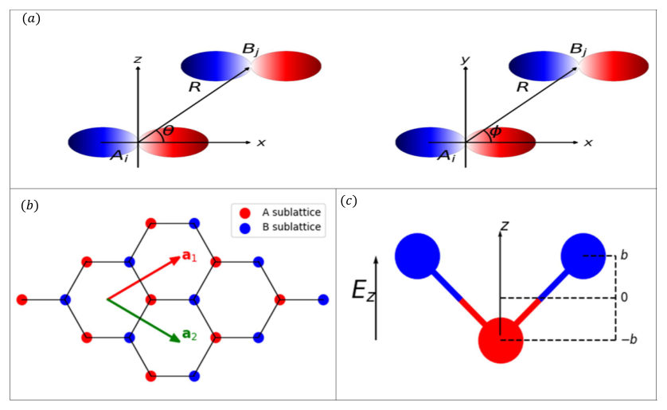
Fig 1. FIG. 1. Lattice structure and orbital configuration. (a) Spatial configuration of 𝑝𝑥orbitals. The orbital centered at the origin corresponds to sublattice 𝐴, while the second orbital belongs to sublattice 𝐵at coordinates (𝑅, 𝜃, 𝜙). (b) Top view of the honeycomb lattice. The primitive lattice vectors for sublattices 𝐴and 𝐵are given by 𝑎1,2 = ( 3
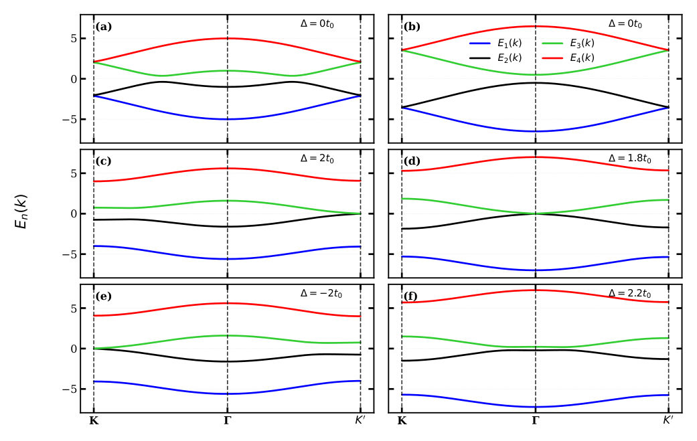
Fig 2. FIG. 2. Energy band structures along the high-symmetry path (K˘𝚪˘K′) for various values of the orbital coupling 𝜆and the staggered potential Δ. Panels (a), (c), and (e) correspond to 𝜆= 2𝑡0, while panels (b), (d), and (f) correspond to 𝜆= 3.5𝑡0. The value of the staggered potential Δ is indicated within each panel. The hopping parameter is fixed at 𝑡1 = 0.25𝑡0.
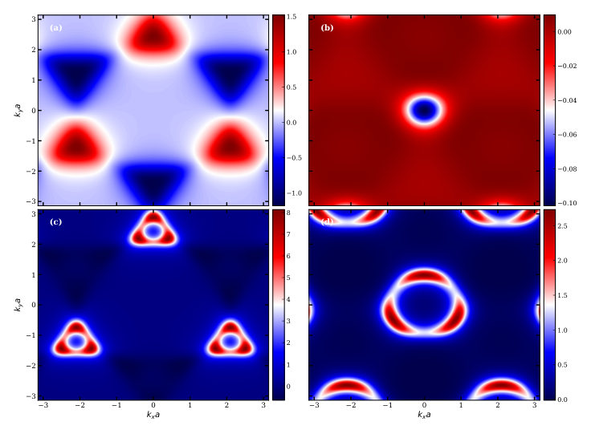
Fig 3. FIG. 3. Distribution of the total Berry curvature of the occupied bands, Ω(k)/𝑎2, in the momentum space (𝑘𝑥, 𝑘𝑦) for various orbital coupling strengths 𝜆. The panels show results for: (a) 𝜆= 0.5 𝑡0, (b) 𝜆= 4 𝑡0, (c) 𝜆= 1.2 𝑡0, and (d) 𝜆= 2.5 𝑡0. The hopping parameter is fixed at 𝑡1 = 0.25 𝑡0 and the staggered potential at Δ = 𝑡0.
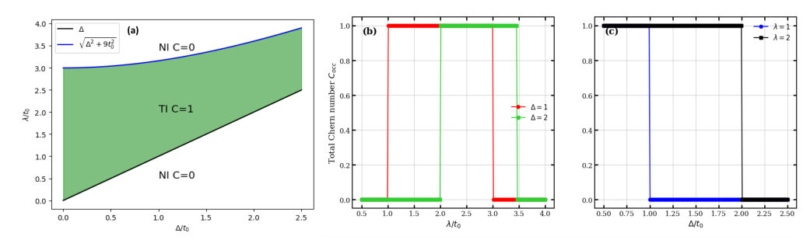
Fig 4. FIG. 4. Variation in the total occupied bands’ Chern number (𝐶𝑜𝑐𝑐= 𝐶1 + 𝐶2) regarding system parameters: (a) topological phase diagram in the (𝜆, Δ) plane; (b) total Chern number dependence on the orbital coupling 𝜆for fixed Δ values (indicated within the panel); (c) total Chern number versus staggered potential Δ for fixed 𝜆values (indicated within the panel). The hopping parameter is fixed at 𝑡1 = 0.25𝑡0.
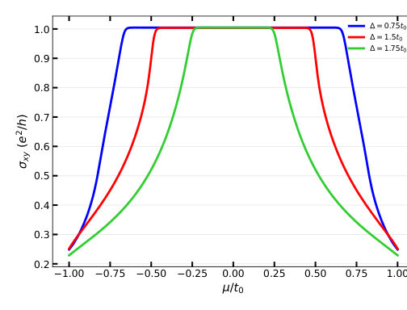
Fig 5. FIG. 5. Anomalous Hall conductivity 𝜎𝑥𝑦(in units of 𝑒2/ℎ) as a function of the chemical potential 𝜇/𝑡0 for various staggered potentials Δ (as labeled in the figure). The parameters are set to 𝑡1 = 0.5 𝑡0 for the hopping and 𝜆= 2 𝑡0 for the orbital coupling.
Summary. The paper theoretically explores achieving Chern insulating behavior in 2D lattices by manipulating orbital couplings and staggered potentials. By tuning these parameters, the system undergoes controlled topological phase transitions, leading to a quantized anomalous Hall effect without needing spin-orbit interaction. This provides a pathway for 'orbitronic' control over fundamental quantum properties.
Why it may be interesting. This work demonstrates how orbital engineering can mimic the effects of spin-orbit coupling to realize topological states, which is highly relevant for designing next-generation electronic devices that rely on controlling band topology.
Detailed structure
Main problem. The study investigates how orbital degrees of freedom can induce topological phase transitions, leading to Chern insulating behavior without requiring intrinsic spin-orbit coupling.
Main result. The system realizes a quantized anomalous Hall conductivity ($\sigma_{xy}=e^2/h$) and Chern number ($C=1$) within a specific parameter window defined by the competition between orbital coupling ($\lambda$) and staggered potential ($\Delta$).
Method. The analysis uses a multi-orbital tight-binding model solved in momentum space, calculating topological invariants like the Berry curvature and Chern number via the Kubo formula.
Model / system. It models a two-dimensional lattice (like buckled honeycomb structures) using an extended Hamiltonian incorporating orbital coupling ($\lambda$) and a staggered potential ($\Delta$), which breaks both Time-Reversal and Inversion symmetry.
Key observables. Quantized anomalous Hall conductivity ($\sigma_{xy}$), Chern number ($C=1$), and the energy band structure $E_n(\mathbf{k})$ along high-symmetry paths.
Important parameters / regimes. The relative magnitudes of the orbital coupling ($\lambda$) and the staggered potential ($\Delta$) define the topological phase diagram, with critical points occurring at $|\lambda| = \pm\Delta$ and $\lambda = \pm\sqrt{\Delta^2+9t_0^{2}}$.
Assumptions / limitations. The analysis neglects $p_z$ orbitals as they are assumed to be energetically far from the Fermi level, simplifying the model to in-plane $p$-orbitals.
Figures summary. Figures illustrate energy band structures showing gap closures at K/K' and $\Gamma$ points for varying parameters, and one figure shows the distribution of Berry curvature concentrating near specific valleys within the topological window.
Paper structure. The paper establishes the Hamiltonian using Slater-Koster formalism, derives the Bloch Hamiltonian in momentum space, analyzes the band structure evolution through parameter tuning ($\lambda$ vs $\Delta$), and finally calculates the Chern number to map out the phase diagram.
Abstract
We present a theoretical study of orbital-induced topological phase transitions in a two-dimensional lattice model with staggered potential $(Δ)$ and orbital coupling $(λ)$ competing with the hopping strength. By tuning these parameters, two gap-closing mechanisms emerge: valley closure at $\mathbf{K}$ and $\mathbf{K'}$ for $λ=\pmΔ$, and a $\mathbfΓ$-point closure at $λ=\pm\sqrt{Δ^2+9t_0^{2}}$. Their interplay defines a topological window in which the Berry curvature localizes near a single valley, yielding a quantized anomalous Hall conductivity ($σ_{xy}=e^{2}/h$) and Chern number ($C=1$). These results demonstrate orbital-driven Chern insulating behavior without spin-orbit coupling. The resulting phase diagram captures the transition from trivial to topological phases and suggests practical routes for orbital engineering in tunable lattice systems.
Authors: Lingrui Mei, PeiYu Cai, Sang-Eon Lee, Yue Li, Shyam Raj Karullithodi, Vadym Kulichenko, Charudatta Pathak, Elton J. G. Santos, Luis Balicas Type: both · Category: other · PDF:https://arxiv.org/pdf/2607.28828v1 Analysis basis: full PDF text, analyzed in chunks
Topic relevance:spintronics-quantum-optics interface1/5
↔ Scroll figures horizontally
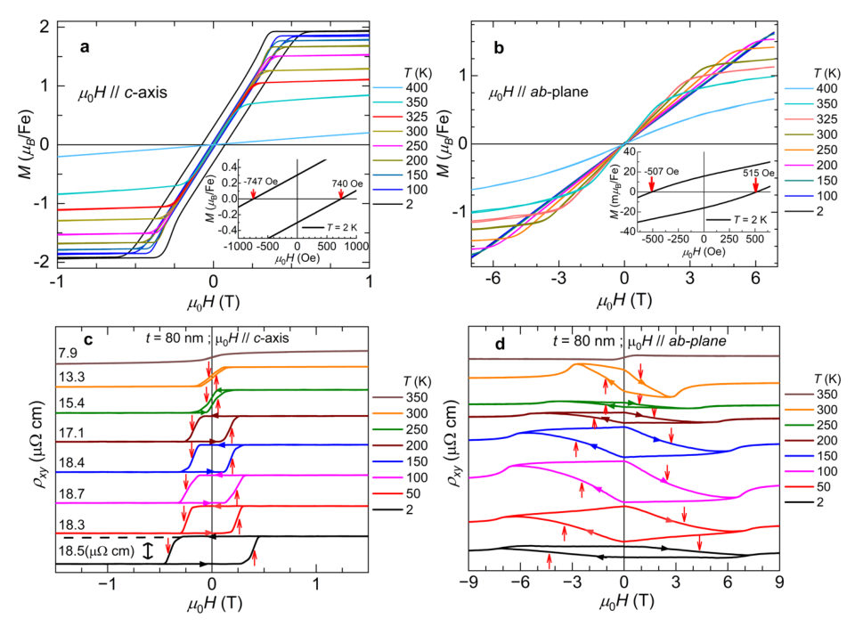
Fig 1. Figure 1| a) Magnetization M as a function of the magnetic field µ0H applied along the interlayer
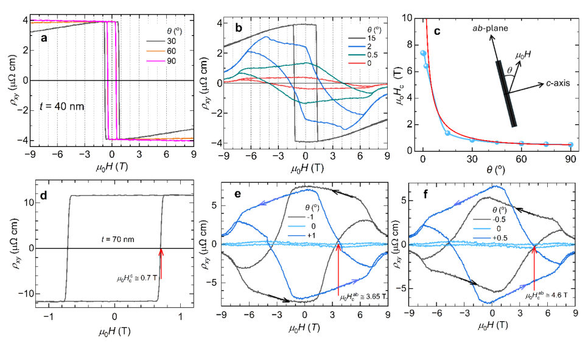
Fig 2. Figure 2| a) Hall resistivity ρxy as a function of the magnetic field µ0H for a t = 40 nm thick
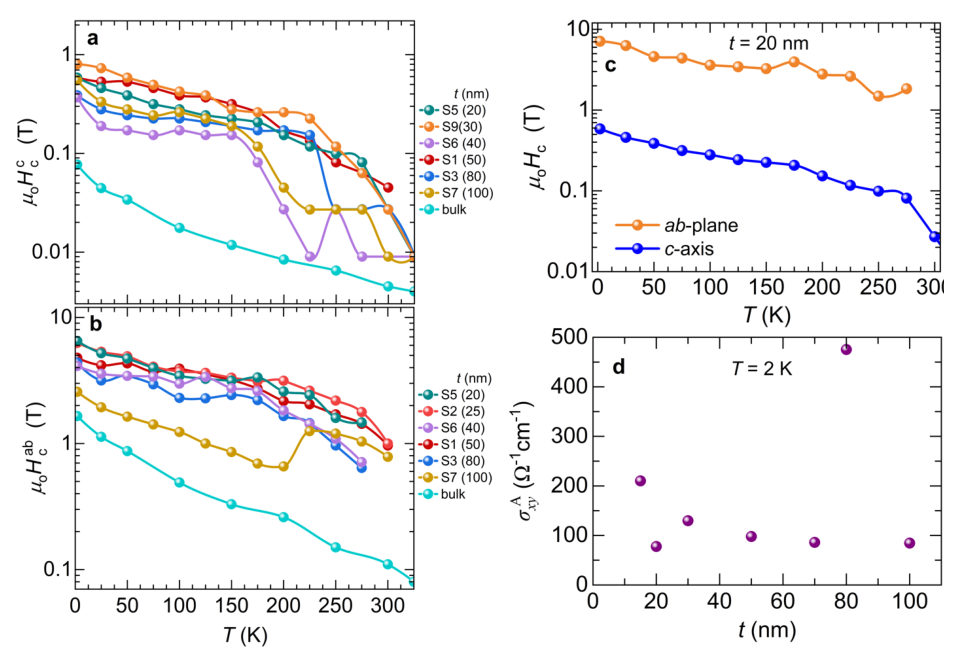
Fig 3. Figure 3| Comparison between coercive fields measured in exfoliated crystals and a bulk crystal.
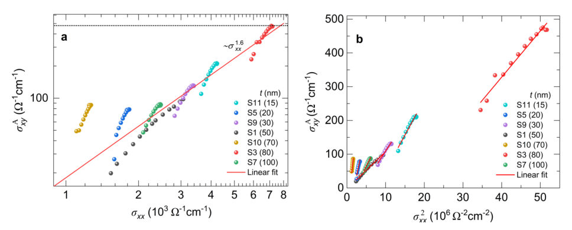
Fig 4. Figure 4| Evaluating the role of disorder for each exfoliated crystal. a) Anomalous Hall
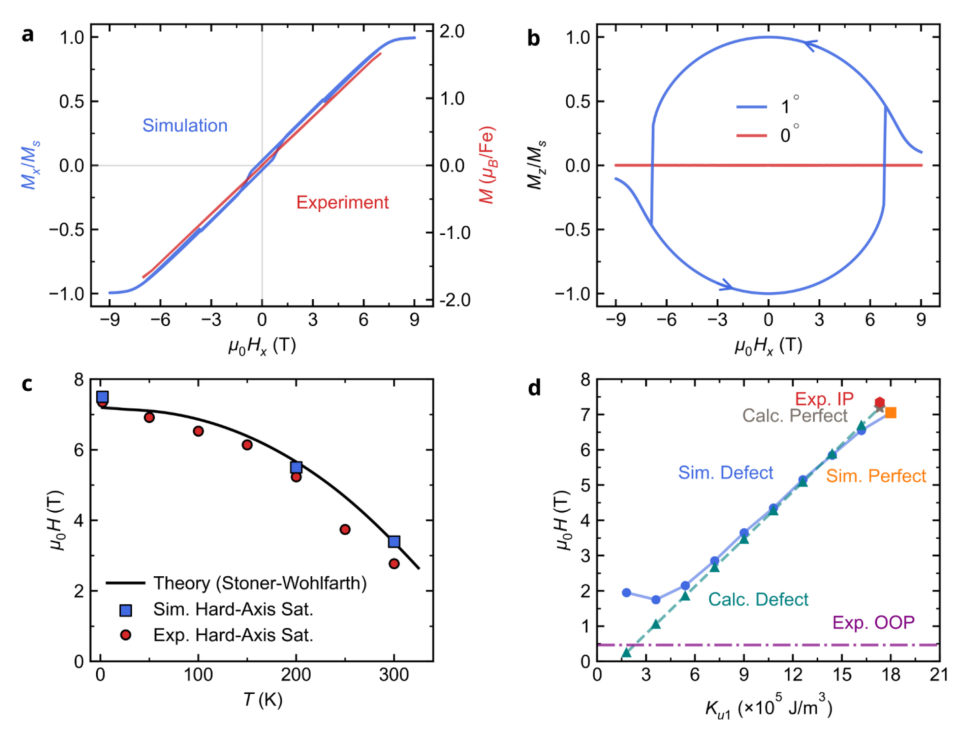
Fig 5. Figure 5| Micromagnetic simulations elucidating the magnetic hardening and reversal
Summary. This work demonstrates that mechanically exfoliating the van der Waals ferromagnet $ ext{Fe}_3 ext{GaTe}_2$ induces a giant enhancement in its room-temperature magnetic coercivity. This effect is attributed to the transition from multi-domain behavior in bulk crystals to quasi-coherent, single-domain rotation in thin flakes. The findings position $ ext{Fe}_3 ext{GaTe}_2$ as a highly promising, rare-earth-free material for next-generation spintronic memory devices.
Why it may be interesting. While primarily condensed matter magnetism, the study of thickness-dependent magnetic transitions and the use of van der Waals heterostructures touches upon concepts relevant to engineered quantum interfaces and low-dimensional physics.
Detailed structure
Main problem. The primary goal is to develop rare-earth-free permanent magnets with high coercivity for spintronic applications, overcoming the limitations of bulk materials.
Main result. Mechanical exfoliation dramatically enhances the room-temperature coercive field in $ ext{Fe}_3 ext{GaTe}_2$ from negligible values to nearly 1 T when the field is applied in the plane.
Method. The study combines experimental measurements (magnetization, anomalous Hall effect) on exfoliated flakes with micromagnetic simulations to analyze the magnetic reversal mechanism.
Model / system. The system is $ ext{Fe}_3 ext{GaTe}_2$, a van der Waals ferromagnet. The analysis uses the Stoner-Wohlfarth model and micromagnetic theory to describe magnetization reversal, contrasting bulk domain-mediated behavior with thin-flake quasi-coherent rotation.
Key observables. Coercive field ($\mu_0H_c$), saturation magnetization ($M_s$), Anomalous Hall resistivity ($
ho_{xy}^A$), and magnetic anisotropy constant ($K$).
Important parameters / regimes. Thickness (down to $<100 ext{ nm}$), temperature ($2 ext{ K}$ to $300 ext{ K}$), and field orientation relative to the crystal planes.
Assumptions / limitations. The enhancement in coercivity is attributed to the system approaching a single-domain limit, governed by intrinsic magnetocrystalline anisotropy, rather than disorder-induced pinning mechanisms.
Figures summary. Figures show $\mu_0H_c$ increasing significantly for planar fields compared to c-axis fields upon exfoliation. Anomalous Hall response plots are used to analyze thickness dependence and distinguish intrinsic vs. extrinsic magnetic contributions.
Paper structure. The paper establishes the need for rare-earth-free magnets, presents experimental evidence showing coercivity enhancement via exfoliation (comparing bulk vs. thin flakes), analyzes this using micromagnetics/AHE measurements, and concludes that the material is promising for spintronics due to its tunable planar anisotropy.
Abstract
Permanent magnets with strong anisotropy and high coercivity underpin modern information and energy technologies, yet rare-earth-free alternatives remain limited. Here, we show that thickness engineering via mechanical exfoliation induces hard magnetic behavior in the van der Waals ferromagnet Fe$_3$GaTe$_2$. Bulk crystals exhibit Curie temperatures above 350 K but negligible room-temperature coercivity. When thinned below 100 nm, the coercive field is dramatically enhanced, reaching nearly 1 T at room temperature for in-plane fields which is comparable to values of conventional hard magnets. Micromagnetic analysis reveals a crossover in magnetization reversal from domain-mediated processes in bulk samples to quasi-coherent rotation in thin flakes, driven by increased effective anisotropy and suppressed domain formation. This thickness-dependent transition enables tuning of magnetic hardness without chemical modification. Combined with high saturation magnetization and robust room-temperature performance, Fe$_3$GaTe$_2$ emerges as a promising rare-earth-free material for spintronic applications. Its layered structure further allows integration into van der Waals heterostructures, where large in-plane coercivity can stabilize magnetic states against perturbations and interlayer coupling, offering potential for high-density nonvolatile memory and domain-wall-based devices.
Authors: Liam A. V. Nagle-Cocco, Christopher A. Crain, Michael J. Dzara, Mathias A. Kiefer, Madeline G. Port, Tolga Han Ulucan, Madeline Van Winkle, Oscar Hathaway, Nicholas A. Strange Type: experiment · Category: other · PDF:https://arxiv.org/pdf/2607.28859v1 Analysis basis: full PDF text, analyzed in chunks
↔ Scroll figures horizontally
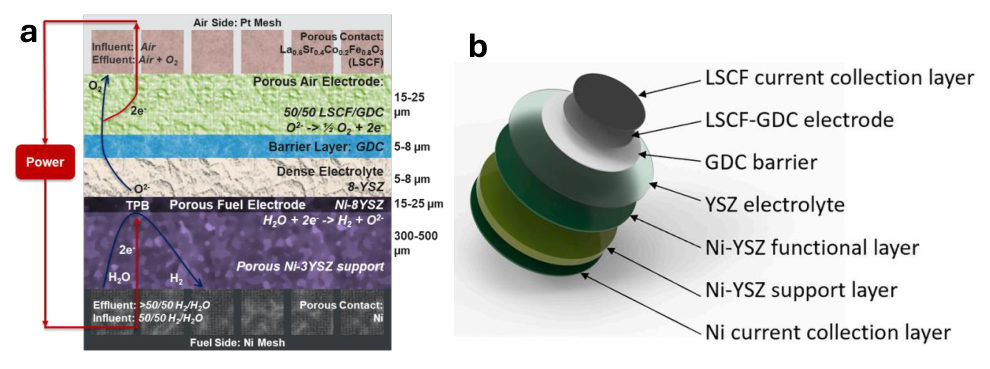
Fig 1. Figure 1: (a) Schematic illustrating the composition and design of the SOECs in this study. (b) Schematic showing the construction of the coin cells used in this study, reproduced from Zhu et al. (2025).Fig 2. Figure 2: Schematic explaining, in partial pseudo-code, the approximate phase identification algorithm used in the protocol for each diffraction pattern in a 2-dimensional grid measured over the cross-section of an SOEC.Fig 3. Figure 3: (a) and (b) SEM images of a tombstone SOEC fragment from the same cell as the fragment studied in this paper. Note that this is not the same actual fragment. (c) Optical image of the tombstone SOEC fragment in the beamline, with the square indicating the region of measurement. FL and SL stand for functional layer and support layer respectively.Fig 4. Figure 4: Heatmap visualising the lattice parameters of (a) GDC, (b) LSCF-6428, and (c) 8YSZ as obtained by automated Rietveld refinement of diffraction data on the SOEC. All three phases are modelled with cubic lattice parameters in this study. White space within the heatmaps indi- cates pixels where the relevant phase is undetected by the algorithm, and is consistent with fuel electrode/air electrode relative positioning.Fig 5. Figure 5(a) shows fit quality quantified by goodness-of-fit (the ratio of Rwp to Rexp) as a function
Summary. This paper presents a novel, fully automated computational protocol for analyzing complex, spatially-resolved X-ray diffraction data from inhomogeneous materials like SOECs. By developing an open-access Python routine, the authors overcome significant manual analysis hurdles to map phase composition and strain across device cross-sections. This methodology is valuable for post mortem characterization of high-temperature electrochemical energy devices.
Why it may be interesting. Not directly relevant
Detailed structure
Main problem. The primary challenge is automating the analysis of massive, spatially-resolved synchrotron diffraction datasets from chemically inhomogeneous polycrystalline materials.
Main result. The authors developed and applied a fully automated Python routine that successfully performs phase identification and Rietveld refinement across complex device cross-sections, enabling detailed post mortem characterization of degradation products in SOECs.
Method. The method involves an iterative, automated protocol combining peak matching, goodness-of-fit checks ($ ext{R}{ ext{wp}}/ ext{R}$), and scale factor analysis within a Rietveld framework, implemented via Python scripts calling Topas.}
Model / system. The study focuses on Solid Oxide Electrolyser Cells (SOECs) fragments, which are analyzed using micron-scale X-ray diffraction ($\mu$-XRD). The technique is applicable to other electrochemical devices like all-solid-state batteries and fuel cells.
Key observables. Lattice parameters of various phases ($ ext{YSZ}$, $ ext{LSCF-6428}$), phase composition maps, strain distribution, and goodness-of-fit metrics across the sample cross-section.
Important parameters / regimes. Micron beam width, operating temperatures (high for SOECs), and crystallographic parameters derived from refinement ($ ext{R}{ ext{wp}}/ ext{R}$).}
Assumptions / limitations. The analysis assumes that the automated protocol can reliably handle data complexity; specific limitations include assuming cubic unit cells when rhombohedral structures are expected, and fixing the zero error to avoid correlation issues.
Figures summary. Figures illustrate SOEC designs, pseudo-code for the phase identification algorithm, heatmaps showing variations in lattice parameters and zero error across the sample, and plots comparing fit quality metrics.
Paper structure. The paper introduces the $\mu$-XRD technique and its analytical bottleneck. It details the automated Python routine (including pseudocode) and applies it to an SOEC case study, presenting results on phase mapping, lattice parameter variations due to chemistry/strain, and limitations encountered during refinement.
Abstract
A novel approach to post mortem characterisation of electrochemical and photovoltaic devices is spatially-resolved diffraction using a hyper-focused, micron-width x-ray beam to examine the distribution of degradation products and strain, a technique called $μ$-XRD. Aside from the experimental difficulties associated with beam focusing and sample preparation, which are themselves non-trivial, the analysis of resulting data is complex and challenging, with full Rietveld analysis rarely attempted in literature. The difficulty lies in the size of the data, which may consist of hundreds or even thousands of diffraction patterns with very different crystallographic phase compositions depending on position within the device, and the difficulty in fitting the data due to the presence of many phases at the same position, including possible degradation products which may be difficult to index and assign to known phases. In this paper, we present a fully-automated open access Python routine for performing phase identification and Rietveld analysis on 2D datasets of diffraction pattern taken at micron-scale positions, measured over the cross-section of a chemically inhomogeneous device with polycrystalline phases. Solid oxide electrolyser cells are a promising technology for green hydrogen production which can utilise waste heat to split water at higher efficiencies than low-temperature electrolysis techniques such as polymer electrolyte membranes, but exhibit many degradation modes due to the high operating temperatures. We present a case study using our analysis protocol on an SOEC fragment encompassing the air electrode, cation diffusion barrier, electrolyte, and fuel electrode. With modification, this protocol could be applied to other devices such as all-solid-state batteries, wet-electrolyte battery electrodes, solid oxide fuel cells, photovoltaic devices, and metal-oxide pseudocapacitors.
Authors: Kosuke Takiguchi, Yoshiharu Krockenberger, Eisuke Magome, Yoji Kunihashi, Hideki Yamamoto Type: experiment · Category: other · PDF:https://arxiv.org/pdf/2607.28909v1 Analysis basis: full PDF text, analyzed in chunks
↔ Scroll figures horizontally
Fig 1. Figure 1: (a,b) High-angle annular dark field scanning transmission electron microscopy (HAADF-STEM) images in the [100] and [110] directions of PrTaN2. The inset shows the expanded images with the schematic atomic images of PrTaN2. The scale bar corresponds to 1 nm. (c,d) Line intensity profiles of red and blue dashed lines in (a) and (b), respectively. Since the intensity of HAADF-STEM represents the atomic number, we can distinguish the cation positions, which means the red and blue lines represent Ta and Pr. For (c) and (d), Pr and Ta are located in alternate shifts in [001] direction. For the in-plane direction, while Pr and Ta are located half cycle change in (c), they are located same...Fig 2. Figure 2: XRD symmetric scan in [001]c direction of YAO measured in SAGA-LS with wave length of 1.00 Å. The crystalline coherency of PrTaN2 in [001] direction is confirmed with the higher order (00l) peaks up to (006). We also observed the Ta3N5 (012) and (023) peaks as well as their higher order diffraction peaks, which indicates that our RF radical source achieves the rich nitrogen environment.Fig 3. Figure 3: XRD symmetric scan aligned in the direction of (a) (101) (χ = 45.5◦), (b) (011) (χ = 45.4◦), (c) (102) (χ = 63.0◦), (d) (103) (χ = 72.9◦), (e) (213) (χ = 37.0◦), (f) (312) (χ = 58.0◦), and (g)(222) (χ = 54.8◦) PrTaN2 planes. (h) In-plane XRD measurement with χ = 0.5◦. The estimated d spacing are presented in Table 1.Fig 4. Figure 4: High resolution reciprocal space maps of the PrTaN2 thin film around the YAO (103)c and YAO (113)c peak. Logarithmic scale is used to express the intensity of the diffraction, which is shown as the color bar. The relaxed film is grown on the substrate, and the film and the substrate share the same crystalline axis.Fig 5. Figure 5: (a)Fitting procedure of eq. (3) to the experimental data. To convert the peak intensity Iobs to the structure factor Fobs, we use eq. (4). By using this procedure, we can decrease the number of fitting parameter using Wyckoffpositions. (b) Crystal structure of PrTaN2 reproduced by the estimated atomic coordinates.
Summary. This paper reports the successful synthesis of a novel ternary nitride, PrTaN2, as an epitaxial thin film using Molecular Beam Epitaxy. The authors characterized its crystal structure as orthorhombic with space group P222 through detailed XRD and STEM analysis. This work establishes MBE as a powerful technique for exploring complex, previously inaccessible nitride materials.
Why it may be interesting. While highly materials-focused, the advanced use of structure factor analysis and systematic elimination of candidate phases mirrors complex pattern recognition problems relevant in quantum state tomography or phase diagram mapping.
Detailed structure
Main problem. The primary goal was the discovery and structural characterization of a novel ternary nitride, PrTaN2, which is difficult to synthesize using conventional bulk methods.
Main result. The authors successfully synthesized PrTaN2 as a thin film via Molecular Beam Epitaxy (MBE) and determined its crystal structure to be orthorhombic with the space group P222.
Method. The study employed MBE for synthesis, followed by structural characterization using X-ray Diffraction (XRD), HAADF-STEM, and advanced structure factor fitting techniques.
Model / system. The physical system is a thin film of the ternary nitride PrTaN2 grown epitaxially on YAlO3 substrates. The analysis involves modeling crystal symmetry and determining atomic coordinates based on diffraction data.
Key observables. Lattice parameters (a, b, c), orthorhombic structure confirmation, space group identification (P222), and the ratio of structure factors ($F_{204}/F_{102}$).
Important parameters / regimes. The synthesis method utilizes an RF nitrogen radical source for highly nitriding conditions; structural analysis relies on Wyckoff position constraints.
Assumptions / limitations. Initial assumptions regarding atomic positions were tested against experimental data, and the final structure determination relied on systematically excluding alternative candidate phases based on diffraction rules.
Figures summary. Figures show HAADF-STEM images confirming cation ordering (Pr vs Ta), FFT patterns matching XRD periodicity, and multiple XRD scans used to confirm the orthorhombic lattice parameters.
Paper structure. The paper follows a progression from synthesis via MBE to structural confirmation using STEM/XRD, followed by rigorous structure factor fitting that systematically rules out competing phases before finalizing the space group assignment.
Abstract
We report the discovery of a novel ternary nitride PrTaN$_2$ synthesized as a thin film using molecular beam epitaxy. The combination of e-beam evaporation for refractory elements and a radio-frequency nitrogen radical source enables growth under a highly nitriding environment, providing access to phases not readily obtained in bulk synthesis. Structural characterization by X-ray diffraction and high-angle annular dark-field scanning transmission electron microscopy reveals that the compound crystallizes in an orthorhombic structure and grows with a well-defined orientation on YAlO$_3$ substrates, while remaining essentially strain-free. To determine the crystal structure from limited thin-film diffraction data, we developed a fitting procedure based on structure factors. By combining extinction rules with constraints from Wyckoff positions, the number of fitting parameters is significantly reduced, enabling reliable structure determination. Systematic exclusion of alternative candidate phases in the Pr-Ta-N system, together with structure factor fitting, identifies the space group as $P222$ and determines the atomic coordinates. The present results demonstrate that thin-film growth with molecular beam epitaxy can stabilize previously unexplored ternary nitrides, and establish a practical approach for structural determination in such systems. This work provides a pathway for the exploration of new complex nitride materials.